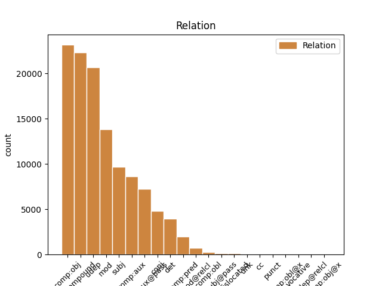
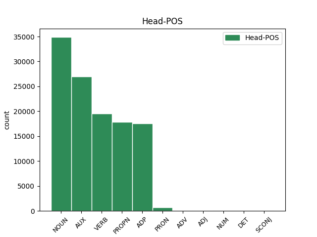
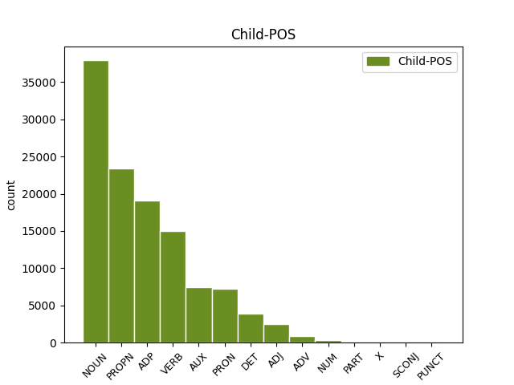

Distribution of features within this leaf



Agreement Rules sorted by frequency.
When the head token is NOUN and the dependent token is ADP.
1 उन्होंने _ _ _ _ 0 _ _ _
2 यहां _ _ _ _ 0 _ _ _
3 वेटिकन _ _ _ _ 0 _ _ _
4 दूतावास _ _ _ _ 0 _ _ _
5 में _ _ _ _ 0 _ _ _
6 एक _ _ _ _ 0 _ _ _
7 शोक _ _ _ _ 0 _ _ _
8 पुस्तिका _ _ _ _ 0 _ _ _
9 पर _ _ _ _ 0 _ _ _
10 हस्ताक्षर _ _ _ _ 0 _ _ _
11 कर _ _ _ _ 0 _ _ _
12 पोप _ _ _ _ 0 _ _ _
13 जॉन _ _ _ _ 0 _ _ _
14 पॉल _ _ _ _ 0 _ _ _
15 द्वितीय _ _ _ _ 0 _ _ _
16 के का ADP PSP AdpType=Post|Case=Acc|Gender=Masc|Number=Sing 17 udep _ ChunkId=NP6|ChunkType=child|Translit=ke
17 निधन निधन NOUN NN Case=Acc|Gender=Masc|Number=Sing|Person=3 0 _ _ _
18 पर _ _ _ _ 0 _ _ _
19 गहरा _ _ _ _ 0 _ _ _
20 दुख _ _ _ _ 0 _ _ _
21 प्रकट _ _ _ _ 0 _ _ _
22 किया _ _ _ _ 0 _ _ _
23 । _ _ _ _ 0 _ _ _
When the head token is PROPN and the dependent token is PROPN.
1 उन्होंने _ _ _ _ 0 _ _ _
2 यहां _ _ _ _ 0 _ _ _
3 वेटिकन _ _ _ _ 0 _ _ _
4 दूतावास _ _ _ _ 0 _ _ _
5 में _ _ _ _ 0 _ _ _
6 एक _ _ _ _ 0 _ _ _
7 शोक _ _ _ _ 0 _ _ _
8 पुस्तिका _ _ _ _ 0 _ _ _
9 पर _ _ _ _ 0 _ _ _
10 हस्ताक्षर _ _ _ _ 0 _ _ _
11 कर _ _ _ _ 0 _ _ _
12 पोप _ _ _ _ 0 _ _ _
13 जॉन _ _ _ _ 0 _ _ _
14 पॉल पॉल PROPN NNPC Case=Nom|Gender=Masc|Number=Sing|Person=3 15 compound _ ChunkId=NP6|ChunkType=child|Tam=0|Translit=pôla|Vib=0
15 द्वितीय द्वितीय PROPN NNP Case=Acc|Gender=Masc|Number=Sing|Person=3 0 _ _ _
16 के _ _ _ _ 0 _ _ _
17 निधन _ _ _ _ 0 _ _ _
18 पर _ _ _ _ 0 _ _ _
19 गहरा _ _ _ _ 0 _ _ _
20 दुख _ _ _ _ 0 _ _ _
21 प्रकट _ _ _ _ 0 _ _ _
22 किया _ _ _ _ 0 _ _ _
23 । _ _ _ _ 0 _ _ _
When the head token is AUX and the dependent token is VERB.
1 दलाई _ _ _ _ 0 _ _ _
2 लामा _ _ _ _ 0 _ _ _
3 ने _ _ _ _ 0 _ _ _
4 भारत _ _ _ _ 0 _ _ _
5 और _ _ _ _ 0 _ _ _
6 चीन _ _ _ _ 0 _ _ _
7 के _ _ _ _ 0 _ _ _
8 रिश्ते _ _ _ _ 0 _ _ _
9 में _ _ _ _ 0 _ _ _
10 आ आ VERB VM Number=Sing|Person=3 11 comp:aux _ ChunkId=VGNF|ChunkType=head|Tam=0|Translit=ā|Vib=0_रह+या
11 रहे रह AUX VAUX Aspect=Perf|Gender=Masc|Number=Sing|Person=3|VerbForm=Part 0 _ _ _
12 सुधार _ _ _ _ 0 _ _ _
13 की _ _ _ _ 0 _ _ _
14 भी _ _ _ _ 0 _ _ _
15 प्रशंसा _ _ _ _ 0 _ _ _
16 की _ _ _ _ 0 _ _ _
17 । _ _ _ _ 0 _ _ _
When the head token is VERB and the dependent token is NOUN.
1 उन्होंने _ _ _ _ 0 _ _ _
2 यहां _ _ _ _ 0 _ _ _
3 वेटिकन _ _ _ _ 0 _ _ _
4 दूतावास _ _ _ _ 0 _ _ _
5 में _ _ _ _ 0 _ _ _
6 एक _ _ _ _ 0 _ _ _
7 शोक _ _ _ _ 0 _ _ _
8 पुस्तिका _ _ _ _ 0 _ _ _
9 पर _ _ _ _ 0 _ _ _
10 हस्ताक्षर _ _ _ _ 0 _ _ _
11 कर _ _ _ _ 0 _ _ _
12 पोप _ _ _ _ 0 _ _ _
13 जॉन _ _ _ _ 0 _ _ _
14 पॉल _ _ _ _ 0 _ _ _
15 द्वितीय _ _ _ _ 0 _ _ _
16 के _ _ _ _ 0 _ _ _
17 निधन _ _ _ _ 0 _ _ _
18 पर _ _ _ _ 0 _ _ _
19 गहरा _ _ _ _ 0 _ _ _
20 दुख दुख NOUN NN Case=Nom|Gender=Masc|Number=Sing|Person=3 22 comp:obj _ ChunkId=NP8|ChunkType=head|Tam=0|Translit=dukha|Vib=0
21 प्रकट _ _ _ _ 0 _ _ _
22 किया कर VERB VM Aspect=Perf|Gender=Masc|Number=Sing|VerbForm=Part|Voice=Act 0 _ _ _
23 । _ _ _ _ 0 _ _ _
When the head token is ADP and the dependent token is NOUN.
1 दलाई _ _ _ _ 0 _ _ _
2 लामा _ _ _ _ 0 _ _ _
3 ने _ _ _ _ 0 _ _ _
4 भारत _ _ _ _ 0 _ _ _
5 और _ _ _ _ 0 _ _ _
6 चीन _ _ _ _ 0 _ _ _
7 के _ _ _ _ 0 _ _ _
8 रिश्ते _ _ _ _ 0 _ _ _
9 में _ _ _ _ 0 _ _ _
10 आ _ _ _ _ 0 _ _ _
11 रहे _ _ _ _ 0 _ _ _
12 सुधार सुधार NOUN NN Case=Acc|Gender=Masc|Number=Sing|Person=3 13 comp:obj _ ChunkId=NP5|ChunkType=head|Tam=0|Translit=sudhāra|Vib=0_का
13 की का ADP PSP AdpType=Post|Case=Nom|Gender=Fem|Number=Sing 0 _ _ _
14 भी _ _ _ _ 0 _ _ _
15 प्रशंसा _ _ _ _ 0 _ _ _
16 की _ _ _ _ 0 _ _ _
17 । _ _ _ _ 0 _ _ _
When the head token is NOUN and the dependent token is NOUN.
1 उन्होंने _ _ _ _ 0 _ _ _
2 यहां _ _ _ _ 0 _ _ _
3 वेटिकन _ _ _ _ 0 _ _ _
4 दूतावास _ _ _ _ 0 _ _ _
5 में _ _ _ _ 0 _ _ _
6 एक _ _ _ _ 0 _ _ _
7 शोक शोक NOUN NNC Case=Nom|Gender=Masc|Number=Sing|Person=3 8 compound _ ChunkId=NP4|ChunkType=child|Tam=0|Translit=śoka|Vib=0
8 पुस्तिका पुस्तिका NOUN NN Case=Acc|Gender=Fem|Number=Sing|Person=3 0 _ _ _
9 पर _ _ _ _ 0 _ _ _
10 हस्ताक्षर _ _ _ _ 0 _ _ _
11 कर _ _ _ _ 0 _ _ _
12 पोप _ _ _ _ 0 _ _ _
13 जॉन _ _ _ _ 0 _ _ _
14 पॉल _ _ _ _ 0 _ _ _
15 द्वितीय _ _ _ _ 0 _ _ _
16 के _ _ _ _ 0 _ _ _
17 निधन _ _ _ _ 0 _ _ _
18 पर _ _ _ _ 0 _ _ _
19 गहरा _ _ _ _ 0 _ _ _
20 दुख _ _ _ _ 0 _ _ _
21 प्रकट _ _ _ _ 0 _ _ _
22 किया _ _ _ _ 0 _ _ _
23 । _ _ _ _ 0 _ _ _
When the head token is AUX and the dependent token is NOUN.
1 उन्होंने _ _ _ _ 0 _ _ _
2 कहा _ _ _ _ 0 _ _ _
3 कि _ _ _ _ 0 _ _ _
4 भारत _ _ _ _ 0 _ _ _
5 और _ _ _ _ 0 _ _ _
6 चीन _ _ _ _ 0 _ _ _
7 सर्वाधिक _ _ _ _ 0 _ _ _
8 आबादी _ _ _ _ 0 _ _ _
9 वाले _ _ _ _ 0 _ _ _
10 देश देश NOUN NN Case=Nom|Gender=Masc|Number=Plur|Person=3 11 comp:pred _ ChunkId=NP5|ChunkType=head|Tam=0|Translit=deśa|Vib=0
11 हैं है AUX VM Mood=Ind|Number=Plur|Person=3|Tense=Pres|VerbForm=Fin|Voice=Act 0 _ _ _
12 । _ _ _ _ 0 _ _ _
When the head token is AUX and the dependent token is AUX.
1 उन्होंने _ _ _ _ 0 _ _ _
2 कहा _ _ _ _ 0 _ _ _
3 कि _ _ _ _ 0 _ _ _
4 चीन _ _ _ _ 0 _ _ _
5 तिब्बत _ _ _ _ 0 _ _ _
6 को _ _ _ _ 0 _ _ _
7 व्यापक _ _ _ _ 0 _ _ _
8 स्वायत्तता _ _ _ _ 0 _ _ _
9 देकर _ _ _ _ 0 _ _ _
10 इस _ _ _ _ 0 _ _ _
11 समस्या _ _ _ _ 0 _ _ _
12 के _ _ _ _ 0 _ _ _
13 समाधान _ _ _ _ 0 _ _ _
14 का _ _ _ _ 0 _ _ _
15 रास्ता _ _ _ _ 0 _ _ _
16 साफ _ _ _ _ 0 _ _ _
17 कर _ _ _ _ 0 _ _ _
18 सकता सक AUX VAUX Aspect=Imp|Gender=Masc|Number=Sing|VerbForm=Part 0 _ _ _
19 है है AUX VAUX Mood=Ind|Number=Sing|Person=3|Tense=Pres|VerbForm=Fin 18 comp:aux _ ChunkId=VGF2|ChunkType=child|Tam=hE|Translit=hai|Vib=है
20 । _ _ _ _ 0 _ _ _
When the head token is ADP and the dependent token is PROPN.
1 उन्होंने _ _ _ _ 0 _ _ _
2 यहां _ _ _ _ 0 _ _ _
3 वेटिकन _ _ _ _ 0 _ _ _
4 दूतावास _ _ _ _ 0 _ _ _
5 में _ _ _ _ 0 _ _ _
6 एक _ _ _ _ 0 _ _ _
7 शोक _ _ _ _ 0 _ _ _
8 पुस्तिका _ _ _ _ 0 _ _ _
9 पर _ _ _ _ 0 _ _ _
10 हस्ताक्षर _ _ _ _ 0 _ _ _
11 कर _ _ _ _ 0 _ _ _
12 पोप _ _ _ _ 0 _ _ _
13 जॉन _ _ _ _ 0 _ _ _
14 पॉल _ _ _ _ 0 _ _ _
15 द्वितीय द्वितीय PROPN NNP Case=Acc|Gender=Masc|Number=Sing|Person=3 16 comp:obj _ ChunkId=NP6|ChunkType=head|Tam=0|Translit=dvitīya|Vib=0_का
16 के का ADP PSP AdpType=Post|Case=Acc|Gender=Masc|Number=Sing 0 _ _ _
17 निधन _ _ _ _ 0 _ _ _
18 पर _ _ _ _ 0 _ _ _
19 गहरा _ _ _ _ 0 _ _ _
20 दुख _ _ _ _ 0 _ _ _
21 प्रकट _ _ _ _ 0 _ _ _
22 किया _ _ _ _ 0 _ _ _
23 । _ _ _ _ 0 _ _ _
When the head token is NOUN and the dependent token is DET.
1 इन यह DET DEM Case=Acc|Number=Plur|Person=3|PronType=Dem 3 det _ ChunkId=NP|ChunkType=child|Translit=ina
2 दोनों _ _ _ _ 0 _ _ _
3 देशों देश NOUN NN Case=Acc|Gender=Masc|Number=Plur|Person=3 0 _ _ _
4 के _ _ _ _ 0 _ _ _
5 बीच _ _ _ _ 0 _ _ _
6 रिश्ते _ _ _ _ 0 _ _ _
7 में _ _ _ _ 0 _ _ _
8 सुधार _ _ _ _ 0 _ _ _
9 से _ _ _ _ 0 _ _ _
10 करोड़ों _ _ _ _ 0 _ _ _
11 लोगों _ _ _ _ 0 _ _ _
12 का _ _ _ _ 0 _ _ _
13 भला _ _ _ _ 0 _ _ _
14 होगा _ _ _ _ 0 _ _ _
15 । _ _ _ _ 0 _ _ _
When the head token is VERB and the dependent token is PRON.
1 उन्होंने वह PRON PRP Case=Acc,Erg|Number=Sing|Person=3|Polite=Form|PronType=Prs 22 subj _ ChunkId=NP|ChunkType=head|Tam=ne|Translit=unhoṁne|Vib=ने
2 यहां _ _ _ _ 0 _ _ _
3 वेटिकन _ _ _ _ 0 _ _ _
4 दूतावास _ _ _ _ 0 _ _ _
5 में _ _ _ _ 0 _ _ _
6 एक _ _ _ _ 0 _ _ _
7 शोक _ _ _ _ 0 _ _ _
8 पुस्तिका _ _ _ _ 0 _ _ _
9 पर _ _ _ _ 0 _ _ _
10 हस्ताक्षर _ _ _ _ 0 _ _ _
11 कर _ _ _ _ 0 _ _ _
12 पोप _ _ _ _ 0 _ _ _
13 जॉन _ _ _ _ 0 _ _ _
14 पॉल _ _ _ _ 0 _ _ _
15 द्वितीय _ _ _ _ 0 _ _ _
16 के _ _ _ _ 0 _ _ _
17 निधन _ _ _ _ 0 _ _ _
18 पर _ _ _ _ 0 _ _ _
19 गहरा _ _ _ _ 0 _ _ _
20 दुख _ _ _ _ 0 _ _ _
21 प्रकट _ _ _ _ 0 _ _ _
22 किया कर VERB VM Aspect=Perf|Gender=Masc|Number=Sing|VerbForm=Part|Voice=Act 0 _ _ _
23 । _ _ _ _ 0 _ _ _
When the head token is PROPN and the dependent token is NOUN.
1 उन्होंने _ _ _ _ 0 _ _ _
2 यहां _ _ _ _ 0 _ _ _
3 वेटिकन _ _ _ _ 0 _ _ _
4 दूतावास _ _ _ _ 0 _ _ _
5 में _ _ _ _ 0 _ _ _
6 एक _ _ _ _ 0 _ _ _
7 शोक _ _ _ _ 0 _ _ _
8 पुस्तिका _ _ _ _ 0 _ _ _
9 पर _ _ _ _ 0 _ _ _
10 हस्ताक्षर _ _ _ _ 0 _ _ _
11 कर _ _ _ _ 0 _ _ _
12 पोप पोप NOUN NNC Case=Nom|Gender=Masc|Number=Sing|Person=3 15 compound _ ChunkId=NP6|ChunkType=child|Tam=0|Translit=popa|Vib=0
13 जॉन _ _ _ _ 0 _ _ _
14 पॉल _ _ _ _ 0 _ _ _
15 द्वितीय द्वितीय PROPN NNP Case=Acc|Gender=Masc|Number=Sing|Person=3 0 _ _ _
16 के _ _ _ _ 0 _ _ _
17 निधन _ _ _ _ 0 _ _ _
18 पर _ _ _ _ 0 _ _ _
19 गहरा _ _ _ _ 0 _ _ _
20 दुख _ _ _ _ 0 _ _ _
21 प्रकट _ _ _ _ 0 _ _ _
22 किया _ _ _ _ 0 _ _ _
23 । _ _ _ _ 0 _ _ _
When the head token is ADP and the dependent token is VERB.
1 दलाई _ _ _ _ 0 _ _ _
2 लामा _ _ _ _ 0 _ _ _
3 ने _ _ _ _ 0 _ _ _
4 कहा _ _ _ _ 0 _ _ _
5 कि _ _ _ _ 0 _ _ _
6 मैं _ _ _ _ 0 _ _ _
7 तिब्बती _ _ _ _ 0 _ _ _
8 समस्या _ _ _ _ 0 _ _ _
9 का _ _ _ _ 0 _ _ _
10 सार्थक _ _ _ _ 0 _ _ _
11 और _ _ _ _ 0 _ _ _
12 मान्य _ _ _ _ 0 _ _ _
13 हल _ _ _ _ 0 _ _ _
14 ढूंढ़ने ढूंढ़ VERB VM Case=Acc|Number=Sing|VerbForm=Inf 15 comp:obj _ ChunkId=VGNN|ChunkType=head|Tam=nA|Translit=ḍhūṁṛhane|Vib=ना_का
15 की का ADP PSP AdpType=Post|Case=Acc|Gender=Fem|Number=Sing 0 _ _ _
16 कोशिश _ _ _ _ 0 _ _ _
17 में _ _ _ _ 0 _ _ _
18 हूं _ _ _ _ 0 _ _ _
19 । _ _ _ _ 0 _ _ _
When the head token is NOUN and the dependent token is PROPN.
1 ७० _ _ _ _ 0 _ _ _
2 वर्षीय _ _ _ _ 0 _ _ _
3 इस _ _ _ _ 0 _ _ _
4 अहिंसावादी _ _ _ _ 0 _ _ _
5 तिब्बती _ _ _ _ 0 _ _ _
6 नेता _ _ _ _ 0 _ _ _
7 ने _ _ _ _ 0 _ _ _
8 यह _ _ _ _ 0 _ _ _
9 भी _ _ _ _ 0 _ _ _
10 कहा _ _ _ _ 0 _ _ _
11 कि _ _ _ _ 0 _ _ _
12 वे _ _ _ _ 0 _ _ _
13 चीन _ _ _ _ 0 _ _ _
14 से _ _ _ _ 0 _ _ _
15 अलगाव _ _ _ _ 0 _ _ _
16 की _ _ _ _ 0 _ _ _
17 बात _ _ _ _ 0 _ _ _
18 नहीं _ _ _ _ 0 _ _ _
19 कर _ _ _ _ 0 _ _ _
20 रहे _ _ _ _ 0 _ _ _
21 हैं _ _ _ _ 0 _ _ _
22 बल्कि _ _ _ _ 0 _ _ _
23 वे _ _ _ _ 0 _ _ _
24 तो _ _ _ _ 0 _ _ _
25 चीनी _ _ _ _ 0 _ _ _
26 संविधान _ _ _ _ 0 _ _ _
27 के _ _ _ _ 0 _ _ _
28 दायरे _ _ _ _ 0 _ _ _
29 में _ _ _ _ 0 _ _ _
30 ही _ _ _ _ 0 _ _ _
31 तिब्बत तिब्बत PROPN NNP Case=Nom|Gender=Masc|Number=Sing|Person=3 32 mod _ ChunkId=NP10|ChunkType=child|Tam=0|Translit=tibbata|Vib=0
32 समस्या समस्या NOUN NN Case=Acc|Gender=Fem|Number=Sing|Person=3 0 _ _ _
33 का _ _ _ _ 0 _ _ _
34 हल _ _ _ _ 0 _ _ _
35 चाहते _ _ _ _ 0 _ _ _
36 हैं _ _ _ _ 0 _ _ _
37 । _ _ _ _ 0 _ _ _
When the head token is NOUN and the dependent token is ADJ.
1 उन्होंने _ _ _ _ 0 _ _ _
2 यहां _ _ _ _ 0 _ _ _
3 वेटिकन _ _ _ _ 0 _ _ _
4 दूतावास _ _ _ _ 0 _ _ _
5 में _ _ _ _ 0 _ _ _
6 एक _ _ _ _ 0 _ _ _
7 शोक _ _ _ _ 0 _ _ _
8 पुस्तिका _ _ _ _ 0 _ _ _
9 पर _ _ _ _ 0 _ _ _
10 हस्ताक्षर _ _ _ _ 0 _ _ _
11 कर _ _ _ _ 0 _ _ _
12 पोप _ _ _ _ 0 _ _ _
13 जॉन _ _ _ _ 0 _ _ _
14 पॉल _ _ _ _ 0 _ _ _
15 द्वितीय _ _ _ _ 0 _ _ _
16 के _ _ _ _ 0 _ _ _
17 निधन _ _ _ _ 0 _ _ _
18 पर _ _ _ _ 0 _ _ _
19 गहरा गहरा ADJ JJ Case=Nom|Gender=Masc|Number=Sing 20 mod _ ChunkId=NP8|ChunkType=child|Translit=gaharā
20 दुख दुख NOUN NN Case=Nom|Gender=Masc|Number=Sing|Person=3 0 _ _ _
21 प्रकट _ _ _ _ 0 _ _ _
22 किया _ _ _ _ 0 _ _ _
23 । _ _ _ _ 0 _ _ _
When the head token is AUX and the dependent token is PRON.
1 मैं मैं PRON PRP Case=Nom|Number=Sing|Person=1|PronType=Prs 16 subj _ ChunkId=NP|ChunkType=head|Tam=0|Translit=maiṁ|Vib=0
2 चीनी _ _ _ _ 0 _ _ _
3 संविधान _ _ _ _ 0 _ _ _
4 के _ _ _ _ 0 _ _ _
5 तहत _ _ _ _ 0 _ _ _
6 ही _ _ _ _ 0 _ _ _
7 तिब्बती _ _ _ _ 0 _ _ _
8 समस्या _ _ _ _ 0 _ _ _
9 का _ _ _ _ 0 _ _ _
10 समाधान _ _ _ _ 0 _ _ _
11 निकाले _ _ _ _ 0 _ _ _
12 जाने _ _ _ _ 0 _ _ _
13 के _ _ _ _ 0 _ _ _
14 पक्ष _ _ _ _ 0 _ _ _
15 में _ _ _ _ 0 _ _ _
16 हूं है AUX VM Mood=Ind|Number=Sing|Person=1|Tense=Pres|VerbForm=Fin|Voice=Act 0 _ _ _
17 । _ _ _ _ 0 _ _ _
When the head token is NOUN and the dependent token is PRON.
1 मैं _ _ _ _ 0 _ _ _
2 स्पष्ट _ _ _ _ 0 _ _ _
3 कर _ _ _ _ 0 _ _ _
4 देना _ _ _ _ 0 _ _ _
5 चाहता _ _ _ _ 0 _ _ _
6 हूं _ _ _ _ 0 _ _ _
7 कि _ _ _ _ 0 _ _ _
8 मेरा मैं PRON PRP Case=Acc,Gen|Gender=Masc|Number=Sing|Person=1|Poss=Yes|PronType=Prs 9 mod _ ChunkId=NP2|ChunkType=head|Tam=kA|Translit=merā|Vib=का
9 दृष्टिकोण दृष्टिकोण NOUN NN Case=Nom|Gender=Masc|Number=Sing|Person=3 0 _ _ _
10 अलगाववादी _ _ _ _ 0 _ _ _
11 नहीं _ _ _ _ 0 _ _ _
12 है _ _ _ _ 0 _ _ _
13 । _ _ _ _ 0 _ _ _
When the head token is AUX and the dependent token is PROPN.
1 उन्होंने _ _ _ _ 0 _ _ _
2 कहा _ _ _ _ 0 _ _ _
3 कि _ _ _ _ 0 _ _ _
4 चीन चीन PROPN NNP Case=Nom|Gender=Masc|Number=Sing|Person=3 18 subj _ ChunkId=NP2|ChunkType=head|Tam=0|Translit=cīna|Vib=0
5 तिब्बत _ _ _ _ 0 _ _ _
6 को _ _ _ _ 0 _ _ _
7 व्यापक _ _ _ _ 0 _ _ _
8 स्वायत्तता _ _ _ _ 0 _ _ _
9 देकर _ _ _ _ 0 _ _ _
10 इस _ _ _ _ 0 _ _ _
11 समस्या _ _ _ _ 0 _ _ _
12 के _ _ _ _ 0 _ _ _
13 समाधान _ _ _ _ 0 _ _ _
14 का _ _ _ _ 0 _ _ _
15 रास्ता _ _ _ _ 0 _ _ _
16 साफ _ _ _ _ 0 _ _ _
17 कर _ _ _ _ 0 _ _ _
18 सकता सक AUX VAUX Aspect=Imp|Gender=Masc|Number=Sing|VerbForm=Part 0 _ _ _
19 है _ _ _ _ 0 _ _ _
20 । _ _ _ _ 0 _ _ _
When the head token is PROPN and the dependent token is ADP.
1 कांग्रेसी _ _ _ _ 0 _ _ _
2 नेताओं _ _ _ _ 0 _ _ _
3 का _ _ _ _ 0 _ _ _
4 कहना _ _ _ _ 0 _ _ _
5 है _ _ _ _ 0 _ _ _
6 कि _ _ _ _ 0 _ _ _
7 महात्मा _ _ _ _ 0 _ _ _
8 गांधी _ _ _ _ 0 _ _ _
9 के का ADP PSP AdpType=Post|Case=Acc|Gender=Masc|Number=Sing 12 udep _ ChunkId=NP2|ChunkType=child|Translit=ke
10 ऐतिहासिक _ _ _ _ 0 _ _ _
11 दांडी _ _ _ _ 0 _ _ _
12 मार्च मार्च PROPN NNP Case=Acc|Gender=Masc|Number=Sing|Person=3 0 _ _ _
13 की _ _ _ _ 0 _ _ _
14 ७५वीं _ _ _ _ 0 _ _ _
15 बरसी _ _ _ _ 0 _ _ _
16 के _ _ _ _ 0 _ _ _
17 मौके _ _ _ _ 0 _ _ _
18 पर _ _ _ _ 0 _ _ _
19 आयोजित _ _ _ _ 0 _ _ _
20 मार्च _ _ _ _ 0 _ _ _
21 से _ _ _ _ 0 _ _ _
22 राज्य _ _ _ _ 0 _ _ _
23 में _ _ _ _ 0 _ _ _
24 पार्टी _ _ _ _ 0 _ _ _
25 की _ _ _ _ 0 _ _ _
26 स्थिति _ _ _ _ 0 _ _ _
27 सुधरी _ _ _ _ 0 _ _ _
28 है _ _ _ _ 0 _ _ _
29 । _ _ _ _ 0 _ _ _
When the head token is VERB and the dependent token is AUX.
1 मार्च _ _ _ _ 0 _ _ _
2 को _ _ _ _ 0 _ _ _
3 काफी _ _ _ _ 0 _ _ _
4 पब्लिसिटी _ _ _ _ 0 _ _ _
5 मिली मिल VERB VM Aspect=Perf|Gender=Fem|Number=Sing|VerbForm=Part|Voice=Act 0 _ _ _
6 और _ _ _ _ 0 _ _ _
7 बापू _ _ _ _ 0 _ _ _
8 के _ _ _ _ 0 _ _ _
9 संदेश _ _ _ _ 0 _ _ _
10 को _ _ _ _ 0 _ _ _
11 जन _ _ _ _ 0 _ _ _
12 जन _ _ _ _ 0 _ _ _
13 तक _ _ _ _ 0 _ _ _
14 पहुंचाया _ _ _ _ 0 _ _ _
15 गया जा AUX VAUX Aspect=Perf|Gender=Masc|Number=Sing|VerbForm=Part 5 conj _ ChunkId=VGF2|ChunkType=child|Tam=yA1|Translit=gayā|Vib=या१
16 । _ _ _ _ 0 _ _ _
When the head token is VERB and the dependent token is ADP.
1 इन _ _ _ _ 0 _ _ _
2 दोनों _ _ _ _ 0 _ _ _
3 देशों _ _ _ _ 0 _ _ _
4 के _ _ _ _ 0 _ _ _
5 बीच बीच ADP NST AdpType=Post|Case=Nom|Gender=Masc|Number=Sing|Person=3 14 udep _ AltTag=ADP-NOUN|ChunkId=NP|ChunkType=child|Translit=bīca
6 रिश्ते _ _ _ _ 0 _ _ _
7 में _ _ _ _ 0 _ _ _
8 सुधार _ _ _ _ 0 _ _ _
9 से _ _ _ _ 0 _ _ _
10 करोड़ों _ _ _ _ 0 _ _ _
11 लोगों _ _ _ _ 0 _ _ _
12 का _ _ _ _ 0 _ _ _
13 भला _ _ _ _ 0 _ _ _
14 होगा हो VERB VM Gender=Masc|Mood=Ind|Number=Sing|Person=3|Tense=Fut|VerbForm=Fin|Voice=Act 0 _ _ _
15 । _ _ _ _ 0 _ _ _
When the head token is AUX and the dependent token is ADP.
1 पत्रिका _ _ _ _ 0 _ _ _
2 ने _ _ _ _ 0 _ _ _
3 सूत्रों _ _ _ _ 0 _ _ _
4 का _ _ _ _ 0 _ _ _
5 हवाला _ _ _ _ 0 _ _ _
6 देते _ _ _ _ 0 _ _ _
7 हुए _ _ _ _ 0 _ _ _
8 कहा _ _ _ _ 0 _ _ _
9 कि _ _ _ _ 0 _ _ _
10 पिछले _ _ _ _ 0 _ _ _
11 वर्ष _ _ _ _ 0 _ _ _
12 दिसंबर _ _ _ _ 0 _ _ _
13 में _ _ _ _ 0 _ _ _
14 व्हाइट _ _ _ _ 0 _ _ _
15 हाउस _ _ _ _ 0 _ _ _
16 में _ _ _ _ 0 _ _ _
17 एक _ _ _ _ 0 _ _ _
18 बैठक _ _ _ _ 0 _ _ _
19 के _ _ _ _ 0 _ _ _
20 दौरान दौरान ADP NST AdpType=Post|Case=Nom|Gender=Masc|Number=Sing|Person=3 31 udep _ AltTag=ADP-NOUN|ChunkId=NP7|ChunkType=child|Translit=daurāna
21 राष्ट्रपति _ _ _ _ 0 _ _ _
22 जॉर्ज _ _ _ _ 0 _ _ _
23 बुश _ _ _ _ 0 _ _ _
24 ने _ _ _ _ 0 _ _ _
25 पाकिस्तानी _ _ _ _ 0 _ _ _
26 राष्ट्रपति _ _ _ _ 0 _ _ _
27 परवेज़ _ _ _ _ 0 _ _ _
28 मुशर्रफ _ _ _ _ 0 _ _ _
29 से _ _ _ _ 0 _ _ _
30 कहा _ _ _ _ 0 _ _ _
31 था था AUX VAUX Gender=Masc|Mood=Ind|Number=Sing|Tense=Past|VerbForm=Fin 0 _ _ _
32 कि _ _ _ _ 0 _ _ _
33 उनका _ _ _ _ 0 _ _ _
34 मानना _ _ _ _ 0 _ _ _
35 है _ _ _ _ 0 _ _ _
36 कि _ _ _ _ 0 _ _ _
37 खान _ _ _ _ 0 _ _ _
38 ने _ _ _ _ 0 _ _ _
39 अपने _ _ _ _ 0 _ _ _
40 सभी _ _ _ _ 0 _ _ _
41 घृणित _ _ _ _ 0 _ _ _
42 सौदों _ _ _ _ 0 _ _ _
43 को _ _ _ _ 0 _ _ _
44 स्वीकार _ _ _ _ 0 _ _ _
45 नहीं _ _ _ _ 0 _ _ _
46 किया _ _ _ _ 0 _ _ _
47 है _ _ _ _ 0 _ _ _
48 । _ _ _ _ 0 _ _ _
When the head token is NOUN and the dependent token is AUX.
1 दलाई _ _ _ _ 0 _ _ _
2 लामा _ _ _ _ 0 _ _ _
3 ने _ _ _ _ 0 _ _ _
4 भारत _ _ _ _ 0 _ _ _
5 और _ _ _ _ 0 _ _ _
6 चीन _ _ _ _ 0 _ _ _
7 के _ _ _ _ 0 _ _ _
8 रिश्ते _ _ _ _ 0 _ _ _
9 में _ _ _ _ 0 _ _ _
10 आ _ _ _ _ 0 _ _ _
11 रहे रह AUX VAUX Aspect=Perf|Gender=Masc|Number=Sing|Person=3|VerbForm=Part 12 mod _ ChunkId=VGNF|ChunkType=child|Tam=yA|Translit=rahe|Vib=या
12 सुधार सुधार NOUN NN Case=Acc|Gender=Masc|Number=Sing|Person=3 0 _ _ _
13 की _ _ _ _ 0 _ _ _
14 भी _ _ _ _ 0 _ _ _
15 प्रशंसा _ _ _ _ 0 _ _ _
16 की _ _ _ _ 0 _ _ _
17 । _ _ _ _ 0 _ _ _
When the head token is VERB and the dependent token is PROPN.
1 उन्होंने _ _ _ _ 0 _ _ _
2 कहा _ _ _ _ 0 _ _ _
3 कि _ _ _ _ 0 _ _ _
4 कांग्रेसियों _ _ _ _ 0 _ _ _
5 की _ _ _ _ 0 _ _ _
6 मदद _ _ _ _ 0 _ _ _
7 से _ _ _ _ 0 _ _ _
8 यह _ _ _ _ 0 _ _ _
9 मार्च मार्च PROPN NNP Case=Nom|Gender=Masc|Number=Sing|Person=3 12 subj _ ChunkId=NP4|ChunkType=head|Tam=0|Translit=mārca|Vib=0
10 काफी _ _ _ _ 0 _ _ _
11 सफल _ _ _ _ 0 _ _ _
12 रहा रह VERB VM Aspect=Perf|Gender=Masc|Number=Sing|VerbForm=Part|Voice=Act 0 _ _ _
13 । _ _ _ _ 0 _ _ _
When the head token is NOUN and the dependent token is VERB.
1 इस _ _ _ _ 0 _ _ _
2 ट्रेन _ _ _ _ 0 _ _ _
3 में _ _ _ _ 0 _ _ _
4 पैलेस _ _ _ _ 0 _ _ _
5 ऑन _ _ _ _ 0 _ _ _
6 व्हील्स _ _ _ _ 0 _ _ _
7 की _ _ _ _ 0 _ _ _
8 तरह _ _ _ _ 0 _ _ _
9 शानो _ _ _ _ 0 _ _ _
10 - _ _ _ _ 0 _ _ _
11 शौकत _ _ _ _ 0 _ _ _
12 भरे भर VERB VM Aspect=Perf|Gender=Masc|Number=Sing|VerbForm=Part 13 mod _ ChunkId=VGNF|ChunkType=head|Tam=yA|Translit=bhare|Vib=या
13 सफ़र सफर NOUN NN Case=Acc|Gender=Masc|Number=Sing|Person=3 0 _ _ _
14 का _ _ _ _ 0 _ _ _
15 अहसास _ _ _ _ 0 _ _ _
16 तो _ _ _ _ 0 _ _ _
17 नहीं _ _ _ _ 0 _ _ _
18 होगा _ _ _ _ 0 _ _ _
19 लेकिन _ _ _ _ 0 _ _ _
20 , _ _ _ _ 0 _ _ _
21 आप _ _ _ _ 0 _ _ _
22 कम _ _ _ _ 0 _ _ _
23 खर्च _ _ _ _ 0 _ _ _
24 में _ _ _ _ 0 _ _ _
25 भारत _ _ _ _ 0 _ _ _
26 दर्शन _ _ _ _ 0 _ _ _
27 के _ _ _ _ 0 _ _ _
28 साथ _ _ _ _ 0 _ _ _
29 - _ _ _ _ 0 _ _ _
30 साथ _ _ _ _ 0 _ _ _
31 चारों _ _ _ _ 0 _ _ _
32 धाम _ _ _ _ 0 _ _ _
33 की _ _ _ _ 0 _ _ _
34 यात्रा _ _ _ _ 0 _ _ _
35 के _ _ _ _ 0 _ _ _
36 सपने _ _ _ _ 0 _ _ _
37 को _ _ _ _ 0 _ _ _
38 साकार _ _ _ _ 0 _ _ _
39 कर _ _ _ _ 0 _ _ _
40 सकते _ _ _ _ 0 _ _ _
41 हैं _ _ _ _ 0 _ _ _
42 । _ _ _ _ 0 _ _ _
When the head token is ADP and the dependent token is PRON.
1 चीनी _ _ _ _ 0 _ _ _
2 प्रधानमंत्री _ _ _ _ 0 _ _ _
3 वेन _ _ _ _ 0 _ _ _
4 जियाबाओ _ _ _ _ 0 _ _ _
5 की _ _ _ _ 0 _ _ _
6 भारत _ _ _ _ 0 _ _ _
7 यात्रा _ _ _ _ 0 _ _ _
8 से _ _ _ _ 0 _ _ _
9 पहले _ _ _ _ 0 _ _ _
10 निर्वासित _ _ _ _ 0 _ _ _
11 तिब्बती _ _ _ _ 0 _ _ _
12 आध्यात्मिक _ _ _ _ 0 _ _ _
13 नेता _ _ _ _ 0 _ _ _
14 दलाई _ _ _ _ 0 _ _ _
15 लामा _ _ _ _ 0 _ _ _
16 ने _ _ _ _ 0 _ _ _
17 कहा _ _ _ _ 0 _ _ _
18 है _ _ _ _ 0 _ _ _
19 कि _ _ _ _ 0 _ _ _
20 चीनी _ _ _ _ 0 _ _ _
21 और _ _ _ _ 0 _ _ _
22 तिब्बती _ _ _ _ 0 _ _ _
23 एक _ _ _ _ 0 _ _ _
24 - _ _ _ _ 0 _ _ _
25 दूसरे दूसरा PRON PRP Case=Acc|Number=Sing|Person=3|PronType=Prs 26 comp:obj _ ChunkId=NP5|ChunkType=head|Tam=0|Translit=dūsare|Vib=0_का
26 की का ADP PSP AdpType=Post|Case=Acc|Gender=Fem|Number=Sing 0 _ _ _
27 सांस्कृतिक _ _ _ _ 0 _ _ _
28 विशिष्टता _ _ _ _ 0 _ _ _
29 का _ _ _ _ 0 _ _ _
30 आदर _ _ _ _ 0 _ _ _
31 करते _ _ _ _ 0 _ _ _
32 हैं _ _ _ _ 0 _ _ _
33 । _ _ _ _ 0 _ _ _
When the head token is VERB and the dependent token is VERB.
1 यूं _ _ _ _ 0 _ _ _
2 तो _ _ _ _ 0 _ _ _
3 दलाई _ _ _ _ 0 _ _ _
4 लामा _ _ _ _ 0 _ _ _
5 ने _ _ _ _ 0 _ _ _
6 वेन _ _ _ _ 0 _ _ _
7 जियाबाओ _ _ _ _ 0 _ _ _
8 को _ _ _ _ 0 _ _ _
9 एक _ _ _ _ 0 _ _ _
10 एकाधिकारवादी _ _ _ _ 0 _ _ _
11 देश _ _ _ _ 0 _ _ _
12 का _ _ _ _ 0 _ _ _
13 नेता _ _ _ _ 0 _ _ _
14 करार _ _ _ _ 0 _ _ _
15 दिया दे VERB VM Aspect=Perf|Gender=Masc|Number=Sing|VerbForm=Part|Voice=Act 0 _ _ _
16 , _ _ _ _ 0 _ _ _
17 लेकिन _ _ _ _ 0 _ _ _
18 उन्होंने _ _ _ _ 0 _ _ _
19 जियाबाओ _ _ _ _ 0 _ _ _
20 को _ _ _ _ 0 _ _ _
21 पूर्ववर्ती _ _ _ _ 0 _ _ _
22 चीनी _ _ _ _ 0 _ _ _
23 प्रधानमंत्रियों _ _ _ _ 0 _ _ _
24 की _ _ _ _ 0 _ _ _
25 तुलना _ _ _ _ 0 _ _ _
26 में _ _ _ _ 0 _ _ _
27 अधिक _ _ _ _ 0 _ _ _
28 व्यावहारिक _ _ _ _ 0 _ _ _
29 , _ _ _ _ 0 _ _ _
30 उदार _ _ _ _ 0 _ _ _
31 और _ _ _ _ 0 _ _ _
32 दूरदर्शी _ _ _ _ 0 _ _ _
33 नेता _ _ _ _ 0 _ _ _
34 भी _ _ _ _ 0 _ _ _
35 करार _ _ _ _ 0 _ _ _
36 दिया दे VERB VM Aspect=Perf|Gender=Masc|Number=Sing|VerbForm=Part|Voice=Act 15 conj _ ChunkId=VGF2|ChunkType=head|Stype=declarative|Tam=yA|Translit=diyā|Vib=या
37 । _ _ _ _ 0 _ _ _
When the head token is NOUN and the dependent token is NUM.
1 इन _ _ _ _ 0 _ _ _
2 दोनों _ _ _ _ 0 _ _ _
3 देशों _ _ _ _ 0 _ _ _
4 के _ _ _ _ 0 _ _ _
5 बीच _ _ _ _ 0 _ _ _
6 रिश्ते _ _ _ _ 0 _ _ _
7 में _ _ _ _ 0 _ _ _
8 सुधार _ _ _ _ 0 _ _ _
9 से _ _ _ _ 0 _ _ _
10 करोड़ों करोड NUM QC Number=Plur|NumType=Card 11 mod _ ChunkId=NP4|ChunkType=child|Translit=karoṛoṁ
11 लोगों लोग NOUN NN Case=Acc|Gender=Masc|Number=Plur|Person=3 0 _ _ _
12 का _ _ _ _ 0 _ _ _
13 भला _ _ _ _ 0 _ _ _
14 होगा _ _ _ _ 0 _ _ _
15 । _ _ _ _ 0 _ _ _
When the head token is PRON and the dependent token is NOUN.
1 कांग्रेस _ _ _ _ 0 _ _ _
2 ने _ _ _ _ 0 _ _ _
3 गांधी _ _ _ _ 0 _ _ _
4 के _ _ _ _ 0 _ _ _
5 साथ _ _ _ _ 0 _ _ _
6 अपने _ _ _ _ 0 _ _ _
7 रिश्ते _ _ _ _ 0 _ _ _
8 को _ _ _ _ 0 _ _ _
9 मजबूत _ _ _ _ 0 _ _ _
10 करने _ _ _ _ 0 _ _ _
11 में _ _ _ _ 0 _ _ _
12 कोई कोई PRON PRP Case=Nom|Number=Sing|Person=3|PronType=Prs 0 _ _ _
13 कसर कसर NOUN NN Case=Nom|Gender=Fem|Number=Sing|Person=3 12 comp:obj _ ChunkId=NP5|ChunkType=head|Tam=0|Translit=kasara|Vib=0
14 नहीं _ _ _ _ 0 _ _ _
15 छोड़ी _ _ _ _ 0 _ _ _
16 । _ _ _ _ 0 _ _ _
When the head token is AUX and the dependent token is ADV.
1 वोल्कर _ _ _ _ 0 _ _ _
2 ने _ _ _ _ 0 _ _ _
3 कहा _ _ _ _ 0 _ _ _
4 कि _ _ _ _ 0 _ _ _
5 उन्हें _ _ _ _ 0 _ _ _
6 यह _ _ _ _ 0 _ _ _
7 पता _ _ _ _ 0 _ _ _
8 नहीं _ _ _ _ 0 _ _ _
9 था _ _ _ _ 0 _ _ _
10 कि _ _ _ _ 0 _ _ _
11 १८ _ _ _ _ 0 _ _ _
12 महीने _ _ _ _ 0 _ _ _
13 लंबी _ _ _ _ 0 _ _ _
14 जाँच _ _ _ _ 0 _ _ _
15 से _ _ _ _ 0 _ _ _
16 इस _ _ _ _ 0 _ _ _
17 विश्वस्तरीय _ _ _ _ 0 _ _ _
18 संस्था _ _ _ _ 0 _ _ _
19 का _ _ _ _ 0 _ _ _
20 घोटाला _ _ _ _ 0 _ _ _
21 कहाँ _ _ _ _ 0 _ _ _
22 तक _ _ _ _ 0 _ _ _
23 खुलेगा _ _ _ _ 0 _ _ _
24 और _ _ _ _ 0 _ _ _
25 वह _ _ _ _ 0 _ _ _
26 इसके _ _ _ _ 0 _ _ _
27 नेता _ _ _ _ 0 _ _ _
28 महासचिव _ _ _ _ 0 _ _ _
29 कोफी _ _ _ _ 0 _ _ _
30 अन्नान _ _ _ _ 0 _ _ _
31 की _ _ _ _ 0 _ _ _
32 कुर्सी _ _ _ _ 0 _ _ _
33 हिलाने _ _ _ _ 0 _ _ _
34 के _ _ _ _ 0 _ _ _
35 इतने _ _ _ _ 0 _ _ _
36 नज़दीक नजदीक ADV NST AdpType=Post|Case=Nom|Gender=Masc|Number=Sing|Person=3 38 udep _ AltTag=ADV-NOUN|ChunkId=NP14|ChunkType=head|Translit=nazadīka
37 पहुँच _ _ _ _ 0 _ _ _
38 जाएंगे जा AUX VAUX Gender=Masc|Mood=Ind|Number=Sing|Person=3|Polite=Form|Tense=Fut|VerbForm=Fin 0 _ _ _
39 । _ _ _ _ 0 _ _ _
When the head token is VERB and the dependent token is ADV.
1 इस _ _ _ _ 0 _ _ _
2 दौरान दौरान ADV NST AdpType=Post|Case=Nom|Gender=Masc|Number=Sing|Person=3 11 udep _ AltTag=ADV-NOUN|ChunkId=NP|ChunkType=head|Translit=daurāna
3 वे _ _ _ _ 0 _ _ _
4 अफ्रीका _ _ _ _ 0 _ _ _
5 , _ _ _ _ 0 _ _ _
6 मध्य _ _ _ _ 0 _ _ _
7 एशिया _ _ _ _ 0 _ _ _
8 और _ _ _ _ 0 _ _ _
9 मध्य _ _ _ _ 0 _ _ _
10 पूर्व _ _ _ _ 0 _ _ _
11 गए जा VERB VM Aspect=Perf|Gender=Masc|Number=Sing|Person=3|Polite=Form|VerbForm=Part|Voice=Act 0 _ _ _
12 । _ _ _ _ 0 _ _ _
When the head token is ADP and the dependent token is ADP.
1 पत्रिका _ _ _ _ 0 _ _ _
2 के _ _ _ _ 0 _ _ _
3 अनुसार _ _ _ _ 0 _ _ _
4 अमेरिका _ _ _ _ 0 _ _ _
5 की का ADP PSP AdpType=Post|Case=Acc|Gender=Fem|Number=Sing 6 comp:obj _ ChunkId=NP2|ChunkType=child|Translit=kī
6 ओर ओर ADP NST AdpType=Post|Case=Acc|Gender=Fem|Number=Sing|Person=3 0 _ _ _
7 से _ _ _ _ 0 _ _ _
8 परमाणु _ _ _ _ 0 _ _ _
9 बाजार _ _ _ _ 0 _ _ _
10 के _ _ _ _ 0 _ _ _
11 इस _ _ _ _ 0 _ _ _
12 घोटाले _ _ _ _ 0 _ _ _
13 को _ _ _ _ 0 _ _ _
14 उजागर _ _ _ _ 0 _ _ _
15 करने _ _ _ _ 0 _ _ _
16 में _ _ _ _ 0 _ _ _
17 रूचि _ _ _ _ 0 _ _ _
18 रखने _ _ _ _ 0 _ _ _
19 के _ _ _ _ 0 _ _ _
20 बावजूद _ _ _ _ 0 _ _ _
21 अमेरिका _ _ _ _ 0 _ _ _
22 और _ _ _ _ 0 _ _ _
23 आईएईए _ _ _ _ 0 _ _ _
24 को _ _ _ _ 0 _ _ _
25 खान _ _ _ _ 0 _ _ _
26 से _ _ _ _ 0 _ _ _
27 सीधे _ _ _ _ 0 _ _ _
28 पूछताछ _ _ _ _ 0 _ _ _
29 करने _ _ _ _ 0 _ _ _
30 की _ _ _ _ 0 _ _ _
31 अनुमति _ _ _ _ 0 _ _ _
32 नहीं _ _ _ _ 0 _ _ _
33 दी _ _ _ _ 0 _ _ _
34 गई _ _ _ _ 0 _ _ _
35 । _ _ _ _ 0 _ _ _
When the head token is VERB and the dependent token is ADJ.
1 अब _ _ _ _ 0 _ _ _
2 जनसंपर्क _ _ _ _ 0 _ _ _
3 का _ _ _ _ 0 _ _ _
4 हमारा _ _ _ _ 0 _ _ _
5 अनुभव _ _ _ _ 0 _ _ _
6 भी _ _ _ _ 0 _ _ _
7 गहरा गहरा ADJ JJ Gender=Masc|Number=Sing 8 compound _ ChunkId=JJP|ChunkType=head|Translit=gaharā
8 हो हो VERB VM Gender=Masc|Number=Sing|Person=3|Voice=Act 0 _ _ _
9 गया _ _ _ _ 0 _ _ _
10 है _ _ _ _ 0 _ _ _
11 । _ _ _ _ 0 _ _ _
When the head token is PROPN and the dependent token is AUX.
1 यह _ _ _ _ 0 _ _ _
2 कहना _ _ _ _ 0 _ _ _
3 है _ _ _ _ 0 _ _ _
4 अमेरिका अमेरिका PROPN NNP Case=Acc|Gender=Masc|Number=Sing|Person=3 0 _ _ _
5 का _ _ _ _ 0 _ _ _
6 , _ _ _ _ 0 _ _ _
7 जो _ _ _ _ 0 _ _ _
8 सऊदी _ _ _ _ 0 _ _ _
9 अरब _ _ _ _ 0 _ _ _
10 और _ _ _ _ 0 _ _ _
11 अन्य _ _ _ _ 0 _ _ _
12 अरब _ _ _ _ 0 _ _ _
13 देशों _ _ _ _ 0 _ _ _
14 को _ _ _ _ 0 _ _ _
15 परमाणु _ _ _ _ 0 _ _ _
16 तक़नीक _ _ _ _ 0 _ _ _
17 बेचने _ _ _ _ 0 _ _ _
18 में _ _ _ _ 0 _ _ _
19 खान _ _ _ _ 0 _ _ _
20 नेटवर्क _ _ _ _ 0 _ _ _
21 की _ _ _ _ 0 _ _ _
22 भूमिका _ _ _ _ 0 _ _ _
23 का _ _ _ _ 0 _ _ _
24 पता _ _ _ _ 0 _ _ _
25 लगा _ _ _ _ 0 _ _ _
26 रहा रह AUX VAUX Aspect=Perf|Gender=Masc|Number=Sing|VerbForm=Part 4 mod@relcl _ ChunkId=VGF2|ChunkType=child|Tam=yA|Translit=rahā|Vib=या
27 है _ _ _ _ 0 _ _ _
28 । _ _ _ _ 0 _ _ _
When the head token is PRON and the dependent token is AUX.
1 किसी _ _ _ _ 0 _ _ _
2 संयुक्त _ _ _ _ 0 _ _ _
3 राष्ट्र _ _ _ _ 0 _ _ _
4 महासचिव _ _ _ _ 0 _ _ _
5 को _ _ _ _ 0 _ _ _
6 कुर्सी _ _ _ _ 0 _ _ _
7 से _ _ _ _ 0 _ _ _
8 गिराने _ _ _ _ 0 _ _ _
9 का _ _ _ _ 0 _ _ _
10 कोई कोई PRON PRP Case=Nom|Number=Sing|Person=3|PronType=Prs 0 _ _ _
11 तुक़ _ _ _ _ 0 _ _ _
12 भी _ _ _ _ 0 _ _ _
13 नहीं _ _ _ _ 0 _ _ _
14 था था AUX VM Gender=Masc|Mood=Ind|Number=Sing|Tense=Past|VerbForm=Fin|Voice=Act 10 comp:obj _ ChunkId=VGF|ChunkType=head|Stype=declarative|Tam=WA|Translit=thā|Vib=था
15 । _ _ _ _ 0 _ _ _
When the head token is PRON and the dependent token is ADP.
1 चीनी _ _ _ _ 0 _ _ _
2 प्रधानमंत्री _ _ _ _ 0 _ _ _
3 वेन _ _ _ _ 0 _ _ _
4 जियाबाओ _ _ _ _ 0 _ _ _
5 की _ _ _ _ 0 _ _ _
6 भारत _ _ _ _ 0 _ _ _
7 यात्रा _ _ _ _ 0 _ _ _
8 से _ _ _ _ 0 _ _ _
9 पहले _ _ _ _ 0 _ _ _
10 निर्वासित _ _ _ _ 0 _ _ _
11 तिब्बती _ _ _ _ 0 _ _ _
12 आध्यात्मिक _ _ _ _ 0 _ _ _
13 नेता _ _ _ _ 0 _ _ _
14 दलाई _ _ _ _ 0 _ _ _
15 लामा _ _ _ _ 0 _ _ _
16 ने _ _ _ _ 0 _ _ _
17 कहा _ _ _ _ 0 _ _ _
18 है _ _ _ _ 0 _ _ _
19 कि _ _ _ _ 0 _ _ _
20 चीनी _ _ _ _ 0 _ _ _
21 और _ _ _ _ 0 _ _ _
22 तिब्बती _ _ _ _ 0 _ _ _
23 एक एक PRON PRPC Case=Nom|Number=Sing|Person=3|PronType=Prs 0 _ _ _
24 - _ _ _ _ 0 _ _ _
25 दूसरे _ _ _ _ 0 _ _ _
26 की का ADP PSP AdpType=Post|Case=Acc|Gender=Fem|Number=Sing 23 conj _ ChunkId=NP5|ChunkType=child|Translit=kī
27 सांस्कृतिक _ _ _ _ 0 _ _ _
28 विशिष्टता _ _ _ _ 0 _ _ _
29 का _ _ _ _ 0 _ _ _
30 आदर _ _ _ _ 0 _ _ _
31 करते _ _ _ _ 0 _ _ _
32 हैं _ _ _ _ 0 _ _ _
33 । _ _ _ _ 0 _ _ _
When the head token is PROPN and the dependent token is ADJ.
1 पत्रिका _ _ _ _ 0 _ _ _
2 के _ _ _ _ 0 _ _ _
3 अनुसार _ _ _ _ 0 _ _ _
4 खान _ _ _ _ 0 _ _ _
5 की _ _ _ _ 0 _ _ _
6 इन _ _ _ _ 0 _ _ _
7 यात्राओं _ _ _ _ 0 _ _ _
8 का _ _ _ _ 0 _ _ _
9 उद्देश्य _ _ _ _ 0 _ _ _
10 अभी _ _ _ _ 0 _ _ _
11 तक _ _ _ _ 0 _ _ _
12 स्पष्ट _ _ _ _ 0 _ _ _
13 नहीं _ _ _ _ 0 _ _ _
14 है _ _ _ _ 0 _ _ _
15 , _ _ _ _ 0 _ _ _
16 लेकिन _ _ _ _ 0 _ _ _
17 खुफिया _ _ _ _ 0 _ _ _
18 अधिकारियों _ _ _ _ 0 _ _ _
19 का _ _ _ _ 0 _ _ _
20 मानना _ _ _ _ 0 _ _ _
21 है _ _ _ _ 0 _ _ _
22 कि _ _ _ _ 0 _ _ _
23 सऊदी _ _ _ _ 0 _ _ _
24 अरब _ _ _ _ 0 _ _ _
25 और _ _ _ _ 0 _ _ _
26 मिस्र _ _ _ _ 0 _ _ _
27 परमाणु _ _ _ _ 0 _ _ _
28 तक़नीक _ _ _ _ 0 _ _ _
29 की _ _ _ _ 0 _ _ _
30 तलाश _ _ _ _ 0 _ _ _
31 में _ _ _ _ 0 _ _ _
32 हैं _ _ _ _ 0 _ _ _
33 और _ _ _ _ 0 _ _ _
34 कई _ _ _ _ 0 _ _ _
35 अफ्रीकी _ _ _ _ 0 _ _ _
36 देश _ _ _ _ 0 _ _ _
37 कच्चे कच्चा ADJ JJ Case=Nom|Gender=Masc|Number=Sing 38 mod _ ChunkId=NP12|ChunkType=child|Translit=kacce
38 यूरेनियम यूरेनियम PROPN NNP Case=Nom|Gender=Masc|Number=Sing|Person=3 0 _ _ _
39 संपन्न _ _ _ _ 0 _ _ _
40 हैं _ _ _ _ 0 _ _ _
41 । _ _ _ _ 0 _ _ _
When the head token is ADV and the dependent token is DET.
1 इस यह DET DEM Case=Acc|Number=Sing|Person=3|PronType=Dem 2 det _ ChunkId=NP|ChunkType=child|Translit=isa
2 दौरान दौरान ADV NST AdpType=Post|Case=Nom|Gender=Masc|Number=Sing|Person=3 0 _ _ _
3 वे _ _ _ _ 0 _ _ _
4 अफ्रीका _ _ _ _ 0 _ _ _
5 , _ _ _ _ 0 _ _ _
6 मध्य _ _ _ _ 0 _ _ _
7 एशिया _ _ _ _ 0 _ _ _
8 और _ _ _ _ 0 _ _ _
9 मध्य _ _ _ _ 0 _ _ _
10 पूर्व _ _ _ _ 0 _ _ _
11 गए _ _ _ _ 0 _ _ _
12 । _ _ _ _ 0 _ _ _
When the head token is PROPN and the dependent token is VERB.
1 चोट _ _ _ _ 0 _ _ _
2 के _ _ _ _ 0 _ _ _
3 कारण _ _ _ _ 0 _ _ _
4 ऑस्ट्रेलिया _ _ _ _ 0 _ _ _
5 के _ _ _ _ 0 _ _ _
6 खिलाफ _ _ _ _ 0 _ _ _
7 टेस्ट _ _ _ _ 0 _ _ _
8 सिरीज़ _ _ _ _ 0 _ _ _
9 के _ _ _ _ 0 _ _ _
10 दो _ _ _ _ 0 _ _ _
11 मैचों _ _ _ _ 0 _ _ _
12 से _ _ _ _ 0 _ _ _
13 बाहर _ _ _ _ 0 _ _ _
14 रहे रह VERB VM Aspect=Perf|Gender=Masc|Number=Sing|Person=3|Polite=Form|VerbForm=Part 16 mod _ ChunkId=VGNF|ChunkType=head|Tam=yA|Translit=rahe|Vib=या
15 सौरव _ _ _ _ 0 _ _ _
16 गांगुली गांगुली PROPN NNP Case=Nom|Gender=Masc|Number=Sing|Person=3 0 _ _ _
17 पाकिस्तान _ _ _ _ 0 _ _ _
18 के _ _ _ _ 0 _ _ _
19 खिलाफ़ _ _ _ _ 0 _ _ _
20 १३ _ _ _ _ 0 _ _ _
21 नवंबर _ _ _ _ 0 _ _ _
22 को _ _ _ _ 0 _ _ _
23 कोलकाता _ _ _ _ 0 _ _ _
24 में _ _ _ _ 0 _ _ _
25 होने _ _ _ _ 0 _ _ _
26 वाले _ _ _ _ 0 _ _ _
27 डे _ _ _ _ 0 _ _ _
28 - _ _ _ _ 0 _ _ _
29 नाइट _ _ _ _ 0 _ _ _
30 मैच _ _ _ _ 0 _ _ _
31 की _ _ _ _ 0 _ _ _
32 कप्तानी _ _ _ _ 0 _ _ _
33 करेंगे _ _ _ _ 0 _ _ _
34 । _ _ _ _ 0 _ _ _
When the head token is AUX and the dependent token is ADJ.
1 रजत _ _ _ _ 0 _ _ _
2 जयंती _ _ _ _ 0 _ _ _
3 मनाने _ _ _ _ 0 _ _ _
4 वाले _ _ _ _ 0 _ _ _
5 और _ _ _ _ 0 _ _ _
6 राजनीतिक _ _ _ _ 0 _ _ _
7 प्रस्ताव _ _ _ _ 0 _ _ _
8 में _ _ _ _ 0 _ _ _
9 इस _ _ _ _ 0 _ _ _
10 बात _ _ _ _ 0 _ _ _
11 का _ _ _ _ 0 _ _ _
12 कोई _ _ _ _ 0 _ _ _
13 जिक्र _ _ _ _ 0 _ _ _
14 नहीं _ _ _ _ 0 _ _ _
15 है _ _ _ _ 0 _ _ _
16 कि _ _ _ _ 0 _ _ _
17 पार्टी _ _ _ _ 0 _ _ _
18 ने _ _ _ _ 0 _ _ _
19 पच्चीस _ _ _ _ 0 _ _ _
20 साल _ _ _ _ 0 _ _ _
21 पहले _ _ _ _ 0 _ _ _
22 जिस _ _ _ _ 0 _ _ _
23 रास्ते _ _ _ _ 0 _ _ _
24 पर _ _ _ _ 0 _ _ _
25 चलने _ _ _ _ 0 _ _ _
26 का _ _ _ _ 0 _ _ _
27 संकल्प _ _ _ _ 0 _ _ _
28 लिया _ _ _ _ 0 _ _ _
29 था _ _ _ _ 0 _ _ _
30 , _ _ _ _ 0 _ _ _
31 वह _ _ _ _ 0 _ _ _
32 रास्ता _ _ _ _ 0 _ _ _
33 क्या _ _ _ _ 0 _ _ _
34 वही _ _ _ _ 0 _ _ _
35 है _ _ _ _ 0 _ _ _
36 जिस _ _ _ _ 0 _ _ _
37 पर _ _ _ _ 0 _ _ _
38 वह _ _ _ _ 0 _ _ _
39 आज _ _ _ _ 0 _ _ _
40 खड़ी खड़ा ADJ JJ Gender=Fem|Number=Sing 41 comp:pred _ ChunkId=JJP|ChunkType=head|Translit=khaṛī
41 है है AUX VM Mood=Ind|Number=Sing|Person=3|Tense=Pres|VerbForm=Fin|Voice=Act 0 _ _ _
42 । _ _ _ _ 0 _ _ _
When the head token is ADJ and the dependent token is ADJ.
1 अनुराग _ _ _ _ 0 _ _ _
2 भठेजा _ _ _ _ 0 _ _ _
3 ने _ _ _ _ 0 _ _ _
4 बताया _ _ _ _ 0 _ _ _
5 कि _ _ _ _ 0 _ _ _
6 याहू _ _ _ _ 0 _ _ _
7 और _ _ _ _ 0 _ _ _
8 अन्य _ _ _ _ 0 _ _ _
9 कंपनियों _ _ _ _ 0 _ _ _
10 ने _ _ _ _ 0 _ _ _
11 नए नया ADJ JJ Case=Acc|Gender=Masc|Number=Sing 0 _ _ _
12 - _ _ _ _ 0 _ _ _
13 नए नया ADJ RDP Case=Acc|Echo=Rdp|Gender=Masc|Number=Sing 11 compound _ AltTag=adj-ADJ|ChunkId=NP4|ChunkType=child|Translit=nae
14 वर्जन _ _ _ _ 0 _ _ _
15 के _ _ _ _ 0 _ _ _
16 मैसेंजर _ _ _ _ 0 _ _ _
17 उपलब्ध _ _ _ _ 0 _ _ _
18 करवाए _ _ _ _ 0 _ _ _
19 हैं _ _ _ _ 0 _ _ _
20 । _ _ _ _ 0 _ _ _
When the head token is PRON and the dependent token is VERB.
1 वोल्कर _ _ _ _ 0 _ _ _
2 ने _ _ _ _ 0 _ _ _
3 बताया _ _ _ _ 0 _ _ _
4 कि _ _ _ _ 0 _ _ _
5 हमने _ _ _ _ 0 _ _ _
6 रिपोर्ट _ _ _ _ 0 _ _ _
7 में _ _ _ _ 0 _ _ _
8 जिस _ _ _ _ 0 _ _ _
9 भाषा _ _ _ _ 0 _ _ _
10 का _ _ _ _ 0 _ _ _
11 इस्तेमाल _ _ _ _ 0 _ _ _
12 किया कर VERB VM Aspect=Perf|Gender=Masc|Number=Sing|VerbForm=Part|Voice=Act 14 mod@relcl _ ChunkId=VGF2|ChunkType=head|SpaceAfter=No|Stype=declarative|Tam=yA|Translit=kiyā|Vib=या
13 , _ _ _ _ 0 _ _ _
14 उसमें वह PRON PRP Case=Acc,Ine|Number=Sing|Person=3|PronType=Prs 0 _ _ _
15 कहा _ _ _ _ 0 _ _ _
16 गया _ _ _ _ 0 _ _ _
17 था _ _ _ _ 0 _ _ _
18 कि _ _ _ _ 0 _ _ _
19 संयुक्त _ _ _ _ 0 _ _ _
20 राष्ट्र _ _ _ _ 0 _ _ _
21 के _ _ _ _ 0 _ _ _
22 मानक _ _ _ _ 0 _ _ _
23 पर _ _ _ _ 0 _ _ _
24 अन्नान _ _ _ _ 0 _ _ _
25 की _ _ _ _ 0 _ _ _
26 क्षमता _ _ _ _ 0 _ _ _
27 खरी _ _ _ _ 0 _ _ _
28 नहीं _ _ _ _ 0 _ _ _
29 उतरती _ _ _ _ 0 _ _ _
30 । _ _ _ _ 0 _ _ _
When the head token is ADP and the dependent token is ADV.
1 कैग _ _ _ _ 0 _ _ _
2 की _ _ _ _ 0 _ _ _
3 एक _ _ _ _ 0 _ _ _
4 अन्य _ _ _ _ 0 _ _ _
5 रिपोर्ट _ _ _ _ 0 _ _ _
6 में _ _ _ _ 0 _ _ _
7 बारूदी _ _ _ _ 0 _ _ _
8 सुरंग _ _ _ _ 0 _ _ _
9 हटाने _ _ _ _ 0 _ _ _
10 के _ _ _ _ 0 _ _ _
11 लिए _ _ _ _ 0 _ _ _
12 जरूरी _ _ _ _ 0 _ _ _
13 उपकरणों _ _ _ _ 0 _ _ _
14 की _ _ _ _ 0 _ _ _
15 खरीद _ _ _ _ 0 _ _ _
16 में _ _ _ _ 0 _ _ _
17 विलंब _ _ _ _ 0 _ _ _
18 के _ _ _ _ 0 _ _ _
19 लिए _ _ _ _ 0 _ _ _
20 पूर्व पूर्व ADV NST Case=Acc|Gender=Masc|Number=Sing|Person=3 21 comp:obj _ ChunkId=NP7|ChunkType=head|Translit=pūrva|Vib=0_का
21 की का ADP PSP AdpType=Post|Case=Acc|Gender=Fem|Number=Sing 0 _ _ _
22 राजग _ _ _ _ 0 _ _ _
23 सरकार _ _ _ _ 0 _ _ _
24 की _ _ _ _ 0 _ _ _
25 खिंचाई _ _ _ _ 0 _ _ _
26 की _ _ _ _ 0 _ _ _
27 गई _ _ _ _ 0 _ _ _
28 है _ _ _ _ 0 _ _ _
29 । _ _ _ _ 0 _ _ _
When the head token is ADJ and the dependent token is NOUN.
1 रजत _ _ _ _ 0 _ _ _
2 जयंती _ _ _ _ 0 _ _ _
3 मनाने _ _ _ _ 0 _ _ _
4 वाले _ _ _ _ 0 _ _ _
5 और _ _ _ _ 0 _ _ _
6 राजनीतिक _ _ _ _ 0 _ _ _
7 प्रस्ताव _ _ _ _ 0 _ _ _
8 में _ _ _ _ 0 _ _ _
9 इस _ _ _ _ 0 _ _ _
10 बात _ _ _ _ 0 _ _ _
11 का _ _ _ _ 0 _ _ _
12 कोई _ _ _ _ 0 _ _ _
13 जिक्र _ _ _ _ 0 _ _ _
14 नहीं _ _ _ _ 0 _ _ _
15 है _ _ _ _ 0 _ _ _
16 कि _ _ _ _ 0 _ _ _
17 पार्टी _ _ _ _ 0 _ _ _
18 ने _ _ _ _ 0 _ _ _
19 पच्चीस _ _ _ _ 0 _ _ _
20 साल _ _ _ _ 0 _ _ _
21 पहले _ _ _ _ 0 _ _ _
22 जिस _ _ _ _ 0 _ _ _
23 रास्ते _ _ _ _ 0 _ _ _
24 पर _ _ _ _ 0 _ _ _
25 चलने _ _ _ _ 0 _ _ _
26 का _ _ _ _ 0 _ _ _
27 संकल्प _ _ _ _ 0 _ _ _
28 लिया _ _ _ _ 0 _ _ _
29 था _ _ _ _ 0 _ _ _
30 , _ _ _ _ 0 _ _ _
31 वह _ _ _ _ 0 _ _ _
32 रास्ता _ _ _ _ 0 _ _ _
33 क्या _ _ _ _ 0 _ _ _
34 वही _ _ _ _ 0 _ _ _
35 है _ _ _ _ 0 _ _ _
36 जिस _ _ _ _ 0 _ _ _
37 पर _ _ _ _ 0 _ _ _
38 वह _ _ _ _ 0 _ _ _
39 आज आज NOUN NN Case=Nom|Gender=Masc|Number=Sing|Person=3 40 mod _ ChunkId=NP13|ChunkType=head|Tam=0|Translit=āja|Vib=0
40 खड़ी खड़ा ADJ JJ Gender=Fem|Number=Sing 0 _ _ _
41 है _ _ _ _ 0 _ _ _
42 । _ _ _ _ 0 _ _ _
When the head token is PROPN and the dependent token is PRON.
1 किसी कोई PRON PRP Case=Acc|Number=Sing|Person=3|PronType=Prs 3 punct _ ChunkId=NP|ChunkType=child|Tam=0|Translit=kisī|Vib=0
2 संयुक्त _ _ _ _ 0 _ _ _
3 राष्ट्र राष्ट्र PROPN NNP Case=Nom|Gender=Masc|Number=Sing|Person=3 0 _ _ _
4 महासचिव _ _ _ _ 0 _ _ _
5 को _ _ _ _ 0 _ _ _
6 कुर्सी _ _ _ _ 0 _ _ _
7 से _ _ _ _ 0 _ _ _
8 गिराने _ _ _ _ 0 _ _ _
9 का _ _ _ _ 0 _ _ _
10 कोई _ _ _ _ 0 _ _ _
11 तुक़ _ _ _ _ 0 _ _ _
12 भी _ _ _ _ 0 _ _ _
13 नहीं _ _ _ _ 0 _ _ _
14 था _ _ _ _ 0 _ _ _
15 । _ _ _ _ 0 _ _ _
When the head token is ADV and the dependent token is ADJ.
1 दूसरी दूसरा ADJ QO Case=Nom|Gender=Fem|Number=Sing|NumType=Ord 2 mod _ ChunkId=NP|ChunkType=child|Translit=dūsarī
2 ओर ओर ADV NST AdpType=Post|Case=Nom|Gender=Fem|Number=Sing|Person=3 0 _ _ _
3 पाकिस्तान _ _ _ _ 0 _ _ _
4 भारत _ _ _ _ 0 _ _ _
5 को _ _ _ _ 0 _ _ _
6 इस _ _ _ _ 0 _ _ _
7 परियोजना _ _ _ _ 0 _ _ _
8 की _ _ _ _ 0 _ _ _
9 सुरक्षा _ _ _ _ 0 _ _ _
10 का _ _ _ _ 0 _ _ _
11 आश्वासन _ _ _ _ 0 _ _ _
12 देता _ _ _ _ 0 _ _ _
13 रहा _ _ _ _ 0 _ _ _
14 है _ _ _ _ 0 _ _ _
15 । _ _ _ _ 0 _ _ _
When the head token is PROPN and the dependent token is DET.
1 पर्यवेक्षकों _ _ _ _ 0 _ _ _
2 का _ _ _ _ 0 _ _ _
3 कहना _ _ _ _ 0 _ _ _
4 है _ _ _ _ 0 _ _ _
5 कि _ _ _ _ 0 _ _ _
6 इस यह DET DEM Case=Acc|Number=Sing|Person=3|PronType=Dem 7 det _ ChunkId=NP2|ChunkType=child|Translit=isa
7 मार्च मार्च PROPN NNP Case=Acc|Gender=Masc|Number=Sing|Person=3 0 _ _ _
8 के _ _ _ _ 0 _ _ _
9 दौरान _ _ _ _ 0 _ _ _
10 कांग्रेसियों _ _ _ _ 0 _ _ _
11 ने _ _ _ _ 0 _ _ _
12 भाजपा _ _ _ _ 0 _ _ _
13 का _ _ _ _ 0 _ _ _
14 जिक्र _ _ _ _ 0 _ _ _
15 करने _ _ _ _ 0 _ _ _
16 से _ _ _ _ 0 _ _ _
17 परहेज _ _ _ _ 0 _ _ _
18 कर _ _ _ _ 0 _ _ _
19 लोगों _ _ _ _ 0 _ _ _
20 में _ _ _ _ 0 _ _ _
21 यह _ _ _ _ 0 _ _ _
22 संदेश _ _ _ _ 0 _ _ _
23 दिया _ _ _ _ 0 _ _ _
24 कि _ _ _ _ 0 _ _ _
25 वह _ _ _ _ 0 _ _ _
26 गांधीवादी _ _ _ _ 0 _ _ _
27 विरासत _ _ _ _ 0 _ _ _
28 को _ _ _ _ 0 _ _ _
29 लेकर _ _ _ _ 0 _ _ _
30 भाजपा _ _ _ _ 0 _ _ _
31 या _ _ _ _ 0 _ _ _
32 किसी _ _ _ _ 0 _ _ _
33 अन्य _ _ _ _ 0 _ _ _
34 पार्टी _ _ _ _ 0 _ _ _
35 से _ _ _ _ 0 _ _ _
36 टकराव _ _ _ _ 0 _ _ _
37 नहीं _ _ _ _ 0 _ _ _
38 चाहती _ _ _ _ 0 _ _ _
39 है _ _ _ _ 0 _ _ _
40 । _ _ _ _ 0 _ _ _
When the head token is NOUN and the dependent token is ADV.
1 इसीलिए _ _ _ _ 0 _ _ _
2 सभी _ _ _ _ 0 _ _ _
3 मुद्दों _ _ _ _ 0 _ _ _
4 को _ _ _ _ 0 _ _ _
5 रफा _ _ _ _ 0 _ _ _
6 - _ _ _ _ 0 _ _ _
7 दफा _ _ _ _ 0 _ _ _
8 करने _ _ _ _ 0 _ _ _
9 के _ _ _ _ 0 _ _ _
10 लिए _ _ _ _ 0 _ _ _
11 नक़वी _ _ _ _ 0 _ _ _
12 आडवाणी _ _ _ _ 0 _ _ _
13 से _ _ _ _ 0 _ _ _
14 आमने आमने NOUN NSTC AdpType=Post|Case=Nom|Gender=Masc|Number=Sing|Person=3 0 _ _ _
15 - _ _ _ _ 0 _ _ _
16 सामने सामने ADV NST AdpType=Post|Case=Nom|Gender=Masc|Number=Sing|Person=3 14 comp:obj _ AltTag=ADV-NOUN|ChunkId=NP6|ChunkType=head|Translit=sāmane
17 मिलना _ _ _ _ 0 _ _ _
18 चाहते _ _ _ _ 0 _ _ _
19 थे _ _ _ _ 0 _ _ _
20 । _ _ _ _ 0 _ _ _
When the head token is ADV and the dependent token is ADP.
1 वरना _ _ _ _ 0 _ _ _
2 , _ _ _ _ 0 _ _ _
3 इराक _ _ _ _ 0 _ _ _
4 के _ _ _ _ 0 _ _ _
5 बाद बाद ADP NST AdpType=Post|Case=Nom|Gender=Masc|Number=Sing|Person=3 9 udep _ AltTag=ADP-NOUN|ChunkId=NP|ChunkType=child|Translit=bāda
6 इरान _ _ _ _ 0 _ _ _
7 पर _ _ _ _ 0 _ _ _
8 हमला _ _ _ _ 0 _ _ _
9 नजदीक नजदीक ADV NST AdpType=Post|Case=Nom|Gender=Masc|Number=Sing|Person=3 0 _ _ _
10 है _ _ _ _ 0 _ _ _
11 । _ _ _ _ 0 _ _ _
When the head token is PRON and the dependent token is DET.
1 इन यह DET DEM Case=Acc|Number=Plur|Person=3|PronType=Dem 2 det _ ChunkId=NP|ChunkType=child|Translit=ina
2 सभी सब PRON PRP Case=Acc|Number=Plur|Person=3|PronType=Prs 0 _ _ _
3 की _ _ _ _ 0 _ _ _
4 सुरक्षा _ _ _ _ 0 _ _ _
5 के _ _ _ _ 0 _ _ _
6 लिए _ _ _ _ 0 _ _ _
7 पुलिसकर्मियों _ _ _ _ 0 _ _ _
8 को _ _ _ _ 0 _ _ _
9 तैनात _ _ _ _ 0 _ _ _
10 किया _ _ _ _ 0 _ _ _
11 गया _ _ _ _ 0 _ _ _
12 है _ _ _ _ 0 _ _ _
13 । _ _ _ _ 0 _ _ _
When the head token is ADV and the dependent token is NOUN.
1 इससे _ _ _ _ 0 _ _ _
2 सीडी _ _ _ _ 0 _ _ _
3 में _ _ _ _ 0 _ _ _
4 निरंतरता _ _ _ _ 0 _ _ _
5 नहीं _ _ _ _ 0 _ _ _
6 है _ _ _ _ 0 _ _ _
7 और _ _ _ _ 0 _ _ _
8 तस्वीरें _ _ _ _ 0 _ _ _
9 भी _ _ _ _ 0 _ _ _
10 ऊपर ऊपर NOUN NSTC AdpType=Post|Case=Nom|Gender=Masc|Number=Sing|Person=3 12 unk _ AltTag=nst-NOUN|ChunkId=NP5|ChunkType=child|Translit=ūpara
11 - _ _ _ _ 0 _ _ _
12 नीचे नीचे ADV NST AdpType=Post|Case=Nom|Gender=Masc|Number=Sing|Person=3 0 _ _ _
13 उछलती _ _ _ _ 0 _ _ _
14 नजर _ _ _ _ 0 _ _ _
15 आई _ _ _ _ 0 _ _ _
16 हैं _ _ _ _ 0 _ _ _
17 । _ _ _ _ 0 _ _ _
When the head token is PRON and the dependent token is PRON.
1 गांगुली _ _ _ _ 0 _ _ _
2 यह _ _ _ _ 0 _ _ _
3 अच्छी _ _ _ _ 0 _ _ _
4 तरह _ _ _ _ 0 _ _ _
5 समझ _ _ _ _ 0 _ _ _
6 गए _ _ _ _ 0 _ _ _
7 हैं _ _ _ _ 0 _ _ _
8 कि _ _ _ _ 0 _ _ _
9 वे _ _ _ _ 0 _ _ _
10 कुछ _ _ _ _ 0 _ _ _
11 भी _ _ _ _ 0 _ _ _
12 करें _ _ _ _ 0 _ _ _
13 , _ _ _ _ 0 _ _ _
14 उनका वह PRON PRP Case=Acc,Gen|Gender=Masc|Number=Sing|Person=3|Polite=Form|Poss=Yes|PronType=Prs 15 mod _ ChunkId=NP6|ChunkType=head|Tam=kA|Translit=unakā|Vib=का
15 कोई कोई PRON PRP Case=Nom|Number=Sing|Person=3|PronType=Prs 0 _ _ _
16 कुछ _ _ _ _ 0 _ _ _
17 बिगाड़ _ _ _ _ 0 _ _ _
18 नहीं _ _ _ _ 0 _ _ _
19 सकता _ _ _ _ 0 _ _ _
20 । _ _ _ _ 0 _ _ _
When the head token is PROPN and the dependent token is ADV.
1 प्रमोद _ _ _ _ 0 _ _ _
2 मित्तल _ _ _ _ 0 _ _ _
3 और _ _ _ _ 0 _ _ _
4 उनकी _ _ _ _ 0 _ _ _
5 सहयोगी _ _ _ _ 0 _ _ _
6 कंपनी _ _ _ _ 0 _ _ _
7 प्रोवाइडर _ _ _ _ 0 _ _ _
8 लिमिटेड _ _ _ _ 0 _ _ _
9 का _ _ _ _ 0 _ _ _
10 दावा _ _ _ _ 0 _ _ _
11 है _ _ _ _ 0 _ _ _
12 कि _ _ _ _ 0 _ _ _
13 नवंबर _ _ _ _ 0 _ _ _
14 २००३ _ _ _ _ 0 _ _ _
15 में _ _ _ _ 0 _ _ _
16 लिमिन्को लिमिन्को PROPN NNP Case=Acc|Gender=Masc|Number=Sing|Person=3 0 _ _ _
17 ( _ _ _ _ 0 _ _ _
18 लाइबेरियन _ _ _ _ 0 _ _ _
19 माइनिंग _ _ _ _ 0 _ _ _
20 कॉरपोरेशन _ _ _ _ 0 _ _ _
21 ) _ _ _ _ 0 _ _ _
22 के _ _ _ _ 0 _ _ _
23 साथ साथ ADV NST AdpType=Post|Case=Nom|Gender=Masc|Number=Sing|Person=3 16 dislocated _ AltTag=ADV-NOUN|ChunkId=FRAGP|ChunkType=head|Translit=sātha
24 समझौते _ _ _ _ 0 _ _ _
25 पर _ _ _ _ 0 _ _ _
26 हस्ताक्षर _ _ _ _ 0 _ _ _
27 होने _ _ _ _ 0 _ _ _
28 के _ _ _ _ 0 _ _ _
29 बाद _ _ _ _ 0 _ _ _
30 इस _ _ _ _ 0 _ _ _
31 परियोजना _ _ _ _ 0 _ _ _
32 पर _ _ _ _ 0 _ _ _
33 उनका _ _ _ _ 0 _ _ _
34 हक़ _ _ _ _ 0 _ _ _
35 बनता _ _ _ _ 0 _ _ _
36 है _ _ _ _ 0 _ _ _
37 । _ _ _ _ 0 _ _ _
When the head token is ADJ and the dependent token is ADP.
1 उन्होंने _ _ _ _ 0 _ _ _
2 कहा _ _ _ _ 0 _ _ _
3 कि _ _ _ _ 0 _ _ _
4 पाकिस्तान _ _ _ _ 0 _ _ _
5 संयुक्त _ _ _ _ 0 _ _ _
6 राष्ट्र _ _ _ _ 0 _ _ _
7 के _ _ _ _ 0 _ _ _
8 प्रस्तावों _ _ _ _ 0 _ _ _
9 की का ADP PSP AdpType=Post|Case=Nom|Gender=Fem|Number=Sing 10 udep _ ChunkId=NP4|ChunkType=child|Translit=kī
10 अनदेखी अनदेखा ADJ JJ Gender=Fem|Number=Sing 0 _ _ _
11 नहीं _ _ _ _ 0 _ _ _
12 करेगा _ _ _ _ 0 _ _ _
13 । _ _ _ _ 0 _ _ _
When the head token is ADV and the dependent token is PRON.
1 पार्टी _ _ _ _ 0 _ _ _
2 की _ _ _ _ 0 _ _ _
3 मुश्किल _ _ _ _ 0 _ _ _
4 यह _ _ _ _ 0 _ _ _
5 है _ _ _ _ 0 _ _ _
6 कि _ _ _ _ 0 _ _ _
7 गुजरात _ _ _ _ 0 _ _ _
8 में _ _ _ _ 0 _ _ _
9 उसके _ _ _ _ 0 _ _ _
10 पास _ _ _ _ 0 _ _ _
11 इस _ _ _ _ 0 _ _ _
12 समय _ _ _ _ 0 _ _ _
13 नरेंद्र _ _ _ _ 0 _ _ _
14 मोदी _ _ _ _ 0 _ _ _
15 का _ _ _ _ 0 _ _ _
16 ऐसा _ _ _ _ 0 _ _ _
17 कोई _ _ _ _ 0 _ _ _
18 विकल्प _ _ _ _ 0 _ _ _
19 नहीं _ _ _ _ 0 _ _ _
20 है _ _ _ _ 0 _ _ _
21 जो _ _ _ _ 0 _ _ _
22 लोकप्रियता _ _ _ _ 0 _ _ _
23 की _ _ _ _ 0 _ _ _
24 दृष्टि _ _ _ _ 0 _ _ _
25 से _ _ _ _ 0 _ _ _
26 उनसे वह PRON PRP Case=Acc,Ins|Number=Sing|Person=3|Polite=Form|PronType=Prs 27 mod _ ChunkId=NP12|ChunkType=head|Tam=se|Translit=unase|Vib=से
27 आगे आगे ADV NST AdpType=Post|Case=Nom|Gender=Masc|Number=Sing|Person=3 0 _ _ _
28 या _ _ _ _ 0 _ _ _
29 उनके _ _ _ _ 0 _ _ _
30 बराबर _ _ _ _ 0 _ _ _
31 हो _ _ _ _ 0 _ _ _
32 । _ _ _ _ 0 _ _ _
When the head token is ADJ and the dependent token is AUX.
1 सूत्रों _ _ _ _ 0 _ _ _
2 के _ _ _ _ 0 _ _ _
3 अनुसार _ _ _ _ 0 _ _ _
4 एफआईआर _ _ _ _ 0 _ _ _
5 काफी _ _ _ _ 0 _ _ _
6 लंबी लंबा ADJ JJ Gender=Fem|Number=Sing 0 _ _ _
7 है _ _ _ _ 0 _ _ _
8 और _ _ _ _ 0 _ _ _
9 इसमें _ _ _ _ 0 _ _ _
10 पूरा _ _ _ _ 0 _ _ _
11 विवरण _ _ _ _ 0 _ _ _
12 दिया _ _ _ _ 0 _ _ _
13 गया _ _ _ _ 0 _ _ _
14 है है AUX VAUX Mood=Ind|Number=Sing|Person=3|Tense=Pres|VerbForm=Fin 6 conj _ ChunkId=VGF2|ChunkType=child|Tam=hE|Translit=hai|Vib=है
15 कि _ _ _ _ 0 _ _ _
16 किस _ _ _ _ 0 _ _ _
17 तरह _ _ _ _ 0 _ _ _
18 से _ _ _ _ 0 _ _ _
19 अनारा _ _ _ _ 0 _ _ _
20 को _ _ _ _ 0 _ _ _
21 अवैध _ _ _ _ 0 _ _ _
22 तरीके _ _ _ _ 0 _ _ _
23 से _ _ _ _ 0 _ _ _
24 हिरासत _ _ _ _ 0 _ _ _
25 में _ _ _ _ 0 _ _ _
26 रखा _ _ _ _ 0 _ _ _
27 गया _ _ _ _ 0 _ _ _
28 था _ _ _ _ 0 _ _ _
29 । _ _ _ _ 0 _ _ _
When the head token is ADJ and the dependent token is PART.
1 यह _ _ _ _ 0 _ _ _
2 छोटा छोटा ADJ JJ Case=Nom|Gender=Masc|Number=Sing 0 _ _ _
3 सा सा PART RP Case=Nom|Gender=Masc|Number=Sing 2 unk _ ChunkId=NP2|ChunkType=child|Translit=sā
4 सुंदर _ _ _ _ 0 _ _ _
5 गाँव _ _ _ _ 0 _ _ _
6 है _ _ _ _ 0 _ _ _
7 , _ _ _ _ 0 _ _ _
8 जहाँ _ _ _ _ 0 _ _ _
9 से _ _ _ _ 0 _ _ _
10 कई _ _ _ _ 0 _ _ _
11 ग्लेशियरों _ _ _ _ 0 _ _ _
12 की _ _ _ _ 0 _ _ _
13 यात्रा _ _ _ _ 0 _ _ _
14 की _ _ _ _ 0 _ _ _
15 जा _ _ _ _ 0 _ _ _
16 सकती _ _ _ _ 0 _ _ _
17 है _ _ _ _ 0 _ _ _
18 । _ _ _ _ 0 _ _ _
When the head token is PRON and the dependent token is PROPN.
1 ' _ _ _ _ 0 _ _ _
2 राम _ _ _ _ 0 _ _ _
3 - _ _ _ _ 0 _ _ _
4 रोटी _ _ _ _ 0 _ _ _
5 पदयात्रा _ _ _ _ 0 _ _ _
6 ' _ _ _ _ 0 _ _ _
7 के _ _ _ _ 0 _ _ _
8 बाद _ _ _ _ 0 _ _ _
9 नई _ _ _ _ 0 _ _ _
10 पार्टी _ _ _ _ 0 _ _ _
11 बनाने _ _ _ _ 0 _ _ _
12 की _ _ _ _ 0 _ _ _
13 बात _ _ _ _ 0 _ _ _
14 से _ _ _ _ 0 _ _ _
15 इनकार _ _ _ _ 0 _ _ _
16 करते _ _ _ _ 0 _ _ _
17 हुए _ _ _ _ 0 _ _ _
18 उमा _ _ _ _ 0 _ _ _
19 ने _ _ _ _ 0 _ _ _
20 कहा _ _ _ _ 0 _ _ _
21 कि _ _ _ _ 0 _ _ _
22 यह _ _ _ _ 0 _ _ _
23 गैर _ _ _ _ 0 _ _ _
24 - _ _ _ _ 0 _ _ _
25 राजनीतिक _ _ _ _ 0 _ _ _
26 पदयात्रा _ _ _ _ 0 _ _ _
27 है _ _ _ _ 0 _ _ _
28 , _ _ _ _ 0 _ _ _
29 जिसे _ _ _ _ 0 _ _ _
30 वे वह PRON PRP Case=Nom|Number=Sing|Person=3|Polite=Form|PronType=Prs 0 _ _ _
31 और _ _ _ _ 0 _ _ _
32 पार्टी _ _ _ _ 0 _ _ _
33 महासचिव _ _ _ _ 0 _ _ _
34 अरुण _ _ _ _ 0 _ _ _
35 जेटली जेटली PROPN NNP Case=Nom|Number=Sing|Person=3 30 conj _ ChunkId=NP11|ChunkType=head|Tam=0|Translit=jeṭalī|Vib=0
36 आंध्र _ _ _ _ 0 _ _ _
37 प्रदेश _ _ _ _ 0 _ _ _
38 के _ _ _ _ 0 _ _ _
39 करीमनगर _ _ _ _ 0 _ _ _
40 से _ _ _ _ 0 _ _ _
41 शुरू _ _ _ _ 0 _ _ _
42 करने _ _ _ _ 0 _ _ _
43 वाले _ _ _ _ 0 _ _ _
44 थे _ _ _ _ 0 _ _ _
45 । _ _ _ _ 0 _ _ _
When the head token is ADJ and the dependent token is DET.
1 पुलिस _ _ _ _ 0 _ _ _
2 के _ _ _ _ 0 _ _ _
3 मुताबिक _ _ _ _ 0 _ _ _
4 वी. _ _ _ _ 0 _ _ _
5 के. _ _ _ _ 0 _ _ _
6 शर्मा _ _ _ _ 0 _ _ _
7 निवेशकों _ _ _ _ 0 _ _ _
8 को _ _ _ _ 0 _ _ _
9 बहुत _ _ _ _ 0 _ _ _
10 कम _ _ _ _ 0 _ _ _
11 अवधि _ _ _ _ 0 _ _ _
12 में _ _ _ _ 0 _ _ _
13 रुपये _ _ _ _ 0 _ _ _
14 दोगुने दोगुना DET QFC Gender=Masc|Number=Plur 16 comp:obj _ ChunkId=JJP|ChunkType=child|Translit=dogune
15 - _ _ _ _ 0 _ _ _
16 तिगुने तिगुना ADJ QF Gender=Masc|Number=Plur 0 _ _ _
17 करने _ _ _ _ 0 _ _ _
18 का _ _ _ _ 0 _ _ _
19 झांसा _ _ _ _ 0 _ _ _
20 देता _ _ _ _ 0 _ _ _
21 था _ _ _ _ 0 _ _ _
22 । _ _ _ _ 0 _ _ _
When the head token is ADJ and the dependent token is PROPN.
1 पहला _ _ _ _ 0 _ _ _
2 ग्लोबीजेन _ _ _ _ 0 _ _ _
3 यानि _ _ _ _ 0 _ _ _
4 सशक्त _ _ _ _ 0 _ _ _
5 अंतर्राष्ट्रीय _ _ _ _ 0 _ _ _
6 विचार _ _ _ _ 0 _ _ _
7 - _ _ _ _ 0 _ _ _
8 व्यवहार _ _ _ _ 0 _ _ _
9 वाले _ _ _ _ 0 _ _ _
10 भारतीयों _ _ _ _ 0 _ _ _
11 , _ _ _ _ 0 _ _ _
12 दूसरा दूसरा ADJ QO Case=Nom|Gender=Masc|Number=Sing|NumType=Ord 0 _ _ _
13 ग्लोबेट्यूड्स _ _ _ _ 0 _ _ _
14 यानि _ _ _ _ 0 _ _ _
15 सशक्त _ _ _ _ 0 _ _ _
16 अंतर्राष्ट्रीय _ _ _ _ 0 _ _ _
17 विचार _ _ _ _ 0 _ _ _
18 और _ _ _ _ 0 _ _ _
19 कमजोर _ _ _ _ 0 _ _ _
20 व्यवहार _ _ _ _ 0 _ _ _
21 वाले _ _ _ _ 0 _ _ _
22 भारतीयों _ _ _ _ 0 _ _ _
23 , _ _ _ _ 0 _ _ _
24 तीसरे _ _ _ _ 0 _ _ _
25 वर्ग _ _ _ _ 0 _ _ _
26 में _ _ _ _ 0 _ _ _
27 ग्लोबेहैव ग्लोबेहैव PROPN NNP Case=Nom|Gender=Masc|Number=Sing|Person=3 12 conj _ ChunkId=NP11|ChunkType=head|Tam=0|Translit=globehaiva|Vib=0
28 यानी _ _ _ _ 0 _ _ _
29 कमजोर _ _ _ _ 0 _ _ _
30 अंतर्राष्ट्रीय _ _ _ _ 0 _ _ _
31 विचार _ _ _ _ 0 _ _ _
32 लेकिन _ _ _ _ 0 _ _ _
33 मजबूत _ _ _ _ 0 _ _ _
34 व्यवहार _ _ _ _ 0 _ _ _
35 वाले _ _ _ _ 0 _ _ _
36 भारतीयों _ _ _ _ 0 _ _ _
37 और _ _ _ _ 0 _ _ _
38 चौथे _ _ _ _ 0 _ _ _
39 वर्ग _ _ _ _ 0 _ _ _
40 में _ _ _ _ 0 _ _ _
41 लोकाजेन _ _ _ _ 0 _ _ _
42 यानी _ _ _ _ 0 _ _ _
43 कमजोर _ _ _ _ 0 _ _ _
44 अंतर्राष्ट्रीय _ _ _ _ 0 _ _ _
45 आचार _ _ _ _ 0 _ _ _
46 - _ _ _ _ 0 _ _ _
47 विचार _ _ _ _ 0 _ _ _
48 वाले _ _ _ _ 0 _ _ _
49 भारतीयों _ _ _ _ 0 _ _ _
50 को _ _ _ _ 0 _ _ _
51 रखा _ _ _ _ 0 _ _ _
52 गया _ _ _ _ 0 _ _ _
53 है _ _ _ _ 0 _ _ _
54 । _ _ _ _ 0 _ _ _
When the head token is ADJ and the dependent token is ADV.
1 आमिर _ _ _ _ 0 _ _ _
2 ने _ _ _ _ 0 _ _ _
3 पास पास ADV NST AdpType=Post|Case=Nom|Gender=Masc|Number=Sing|Person=3 4 mod _ AltTag=ADV-NOUN|ChunkId=NP2|ChunkType=head|Translit=pāsa
4 खड़े खडा ADJ JJ Case=Acc|Gender=Masc|Number=Sing 0 _ _ _
5 एक _ _ _ _ 0 _ _ _
6 फोटोग्राफर _ _ _ _ 0 _ _ _
7 को _ _ _ _ 0 _ _ _
8 बुलाया _ _ _ _ 0 _ _ _
9 और _ _ _ _ 0 _ _ _
10 महिला _ _ _ _ 0 _ _ _
11 के _ _ _ _ 0 _ _ _
12 साथ _ _ _ _ 0 _ _ _
13 फोटो _ _ _ _ 0 _ _ _
14 खींचने _ _ _ _ 0 _ _ _
15 तथा _ _ _ _ 0 _ _ _
16 महिला _ _ _ _ 0 _ _ _
17 को _ _ _ _ 0 _ _ _
18 फोटो _ _ _ _ 0 _ _ _
19 देने _ _ _ _ 0 _ _ _
20 को _ _ _ _ 0 _ _ _
21 कहा _ _ _ _ 0 _ _ _
22 । _ _ _ _ 0 _ _ _
When the head token is NOUN and the dependent token is X.
1 इसके _ _ _ _ 0 _ _ _
2 अलावा _ _ _ _ 0 _ _ _
3 भी _ _ _ _ 0 _ _ _
4 कई _ _ _ _ 0 _ _ _
5 रैकेटों _ _ _ _ 0 _ _ _
6 का _ _ _ _ 0 _ _ _
7 संचालन _ _ _ _ 0 _ _ _
8 महिलाएं _ _ _ _ 0 _ _ _
9 कर _ _ _ _ 0 _ _ _
10 रही _ _ _ _ 0 _ _ _
11 हैं _ _ _ _ 0 _ _ _
12 , _ _ _ _ 0 _ _ _
13 जिनमें _ _ _ _ 0 _ _ _
14 दर्जन दर्जन NOUN NN Case=Nom|Gender=Masc|Number=Sing|Person=3 0 _ _ _
15 - _ _ _ _ 0 _ _ _
16 दर्जन दर्जन X RDP Case=Nom|Gender=Masc|Number=Sing|Person=3 14 compound _ ChunkId=NP6|ChunkType=child|Tam=0|Translit=darjana|Vib=0
17 भर _ _ _ _ 0 _ _ _
18 लड़कियों _ _ _ _ 0 _ _ _
19 को _ _ _ _ 0 _ _ _
20 शामिल _ _ _ _ 0 _ _ _
21 किया _ _ _ _ 0 _ _ _
22 गया _ _ _ _ 0 _ _ _
23 है _ _ _ _ 0 _ _ _
24 । _ _ _ _ 0 _ _ _
When the head token is ADJ and the dependent token is X.
1 रिटायर्ड _ _ _ _ 0 _ _ _
2 फौजियों _ _ _ _ 0 _ _ _
3 ने _ _ _ _ 0 _ _ _
4 सेना _ _ _ _ 0 _ _ _
5 के _ _ _ _ 0 _ _ _
6 आमंत्रण _ _ _ _ 0 _ _ _
7 पर _ _ _ _ 0 _ _ _
8 बहुत _ _ _ _ 0 _ _ _
9 उत्साह _ _ _ _ 0 _ _ _
10 दिखाया _ _ _ _ 0 _ _ _
11 है _ _ _ _ 0 _ _ _
12 और _ _ _ _ 0 _ _ _
13 वे _ _ _ _ 0 _ _ _
14 बड़ी बड़ा X INTF Case=Acc|Gender=Fem|Number=Sing 15 mod _ ChunkId=NP6|ChunkType=child|Translit=baṛī
15 अच्छी अच्छा ADJ JJ Case=Acc|Gender=Fem|Number=Sing 0 _ _ _
16 तैयारी _ _ _ _ 0 _ _ _
17 के _ _ _ _ 0 _ _ _
18 साथ _ _ _ _ 0 _ _ _
19 ट्रेनिंग _ _ _ _ 0 _ _ _
20 के _ _ _ _ 0 _ _ _
21 काम _ _ _ _ 0 _ _ _
22 में _ _ _ _ 0 _ _ _
23 जुट _ _ _ _ 0 _ _ _
24 गए _ _ _ _ 0 _ _ _
25 हैं _ _ _ _ 0 _ _ _
26 । _ _ _ _ 0 _ _ _
When the head token is VERB and the dependent token is NUM.
1 उन्होंने _ _ _ _ 0 _ _ _
2 कहा _ _ _ _ 0 _ _ _
3 कि _ _ _ _ 0 _ _ _
4 ३० _ _ _ _ 0 _ _ _
5 अप्रैल _ _ _ _ 0 _ _ _
6 तक _ _ _ _ 0 _ _ _
7 पार्टी _ _ _ _ 0 _ _ _
8 को _ _ _ _ 0 _ _ _
9 झंडा _ _ _ _ 0 _ _ _
10 और _ _ _ _ 0 _ _ _
11 चुनाव _ _ _ _ 0 _ _ _
12 चिह्न _ _ _ _ 0 _ _ _
13 दोनों दो NUM QC Number=Plur|NumType=Card 14 comp:pred _ ChunkId=NP6|ChunkType=head|Translit=donoṁ
14 मिल मिल VERB VM Number=Plur|Person=3|Voice=Act 0 _ _ _
15 जाएगें _ _ _ _ 0 _ _ _
16 । _ _ _ _ 0 _ _ _
When the head token is NUM and the dependent token is ADP.
1 देश _ _ _ _ 0 _ _ _
2 के का ADP PSP AdpType=Post|Case=Acc|Gender=Masc|Number=Plur 3 udep _ ChunkId=NP|ChunkType=child|Translit=ke
3 हजारों हजार NUM QC Case=Acc|Number=Plur|NumType=Card 0 _ _ _
4 निजी _ _ _ _ 0 _ _ _
5 गैर _ _ _ _ 0 _ _ _
6 अनुदान _ _ _ _ 0 _ _ _
7 प्राप्त _ _ _ _ 0 _ _ _
8 और _ _ _ _ 0 _ _ _
9 अल्पसंख्यक _ _ _ _ 0 _ _ _
10 कॉलेजों _ _ _ _ 0 _ _ _
11 के _ _ _ _ 0 _ _ _
12 मामले _ _ _ _ 0 _ _ _
13 में _ _ _ _ 0 _ _ _
14 सुप्रीम _ _ _ _ 0 _ _ _
15 कोर्ट _ _ _ _ 0 _ _ _
16 ने _ _ _ _ 0 _ _ _
17 बुधवार _ _ _ _ 0 _ _ _
18 को _ _ _ _ 0 _ _ _
19 प्रबंधन _ _ _ _ 0 _ _ _
20 कोटे _ _ _ _ 0 _ _ _
21 की _ _ _ _ 0 _ _ _
22 सीटें _ _ _ _ 0 _ _ _
23 निर्धारित _ _ _ _ 0 _ _ _
24 करने _ _ _ _ 0 _ _ _
25 और _ _ _ _ 0 _ _ _
26 इनके _ _ _ _ 0 _ _ _
27 उम्मीदवारों _ _ _ _ 0 _ _ _
28 के _ _ _ _ 0 _ _ _
29 चयन _ _ _ _ 0 _ _ _
30 के _ _ _ _ 0 _ _ _
31 तरीके _ _ _ _ 0 _ _ _
32 पर _ _ _ _ 0 _ _ _
33 अपना _ _ _ _ 0 _ _ _
34 फैसला _ _ _ _ 0 _ _ _
35 सुरक्षित _ _ _ _ 0 _ _ _
36 रखा _ _ _ _ 0 _ _ _
37 है _ _ _ _ 0 _ _ _
38 । _ _ _ _ 0 _ _ _
When the head token is ADV and the dependent token is ADV.
1 उन्होंने _ _ _ _ 0 _ _ _
2 स्टेडियम _ _ _ _ 0 _ _ _
3 के _ _ _ _ 0 _ _ _
4 अंदर अंदर ADV NST AdpType=Post|Case=Nom|Gender=Masc|Number=Sing|Person=3 0 _ _ _
5 और _ _ _ _ 0 _ _ _
6 बाहर बाहर ADV NST AdpType=Post|Case=Nom|Gender=Masc|Number=Sing|Person=3 4 conj _ AltTag=ADV-NOUN|ChunkId=NP4|ChunkType=head|Translit=bāhara
7 तैनात _ _ _ _ 0 _ _ _
8 पुलिस _ _ _ _ 0 _ _ _
9 के _ _ _ _ 0 _ _ _
10 जवानों _ _ _ _ 0 _ _ _
11 पर _ _ _ _ 0 _ _ _
12 भी _ _ _ _ 0 _ _ _
13 पथराव _ _ _ _ 0 _ _ _
14 किया _ _ _ _ 0 _ _ _
15 । _ _ _ _ 0 _ _ _
When the head token is VERB and the dependent token is PART.
1 इसके _ _ _ _ 0 _ _ _
2 आस _ _ _ _ 0 _ _ _
3 - _ _ _ _ 0 _ _ _
4 पास _ _ _ _ 0 _ _ _
5 की _ _ _ _ 0 _ _ _
6 दीवारें _ _ _ _ 0 _ _ _
7 कुछ _ _ _ _ 0 _ _ _
8 झुकी झुक VERB VM Aspect=Perf|Gender=Fem|Number=Plur|VerbForm=Part 0 _ _ _
9 हुई _ _ _ _ 0 _ _ _
10 सी सा PART RP Gender=Fem|Number=Plur 8 unk _ ChunkId=VGNF|ChunkType=child|Translit=sī
11 हैं _ _ _ _ 0 _ _ _
12 जिसके _ _ _ _ 0 _ _ _
13 कारण _ _ _ _ 0 _ _ _
14 इसे _ _ _ _ 0 _ _ _
15 हिंडोला _ _ _ _ 0 _ _ _
16 महल _ _ _ _ 0 _ _ _
17 कहा _ _ _ _ 0 _ _ _
18 जाता _ _ _ _ 0 _ _ _
19 है _ _ _ _ 0 _ _ _
20 . _ _ _ _ 0 _ _ _
When the head token is DET and the dependent token is PART.
1 यदि _ _ _ _ 0 _ _ _
2 आपके _ _ _ _ 0 _ _ _
3 पास _ _ _ _ 0 _ _ _
4 थोड़ा थोड़ा DET QF Case=Nom|Gender=Masc|Number=Sing 0 _ _ _
5 सा सा PART RP Case=Nom|Gender=Masc|Number=Sing 4 unk _ ChunkId=NP2|ChunkType=child|Translit=sā
6 वक्त _ _ _ _ 0 _ _ _
7 और _ _ _ _ 0 _ _ _
8 हौसला _ _ _ _ 0 _ _ _
9 हो _ _ _ _ 0 _ _ _
10 तो _ _ _ _ 0 _ _ _
11 सूर्योदय _ _ _ _ 0 _ _ _
12 के _ _ _ _ 0 _ _ _
13 समय _ _ _ _ 0 _ _ _
14 यहाँ _ _ _ _ 0 _ _ _
15 की _ _ _ _ 0 _ _ _
16 पहाड़ियों _ _ _ _ 0 _ _ _
17 पर _ _ _ _ 0 _ _ _
18 चहल _ _ _ _ 0 _ _ _
19 - _ _ _ _ 0 _ _ _
20 कदमी _ _ _ _ 0 _ _ _
21 करना _ _ _ _ 0 _ _ _
22 बेहद _ _ _ _ 0 _ _ _
23 सुखद _ _ _ _ 0 _ _ _
24 लगता _ _ _ _ 0 _ _ _
25 है _ _ _ _ 0 _ _ _
26 । _ _ _ _ 0 _ _ _
When the head token is ADV and the dependent token is VERB.
1 उन्होंने _ _ _ _ 0 _ _ _
2 कहा _ _ _ _ 0 _ _ _
3 कि _ _ _ _ 0 _ _ _
4 उत्तर _ _ _ _ 0 _ _ _
5 प्रदेश _ _ _ _ 0 _ _ _
6 में _ _ _ _ 0 _ _ _
7 विधान _ _ _ _ 0 _ _ _
8 सभा _ _ _ _ 0 _ _ _
9 चुनाव _ _ _ _ 0 _ _ _
10 करीब करीब ADV NST AdpType=Post|Case=Nom|Gender=Masc|Number=Sing|Person=3 0 _ _ _
11 हैं _ _ _ _ 0 _ _ _
12 और _ _ _ _ 0 _ _ _
13 कांग्रेस _ _ _ _ 0 _ _ _
14 निश्चित _ _ _ _ 0 _ _ _
15 रूप _ _ _ _ 0 _ _ _
16 से _ _ _ _ 0 _ _ _
17 सोनिया _ _ _ _ 0 _ _ _
18 के _ _ _ _ 0 _ _ _
19 इस _ _ _ _ 0 _ _ _
20 कथित _ _ _ _ 0 _ _ _
21 त्याग _ _ _ _ 0 _ _ _
22 को _ _ _ _ 0 _ _ _
23 भुनाएगी भुना VERB VM Gender=Fem|Mood=Ind|Number=Sing|Person=3|Tense=Fut|VerbForm=Fin|Voice=Act 10 conj _ ChunkId=VGF3|ChunkType=head|SpaceAfter=No|Stype=declarative|Tam=gA|Translit=bhunāegī|Vib=गा
24 , _ _ _ _ 0 _ _ _
25 जहां _ _ _ _ 0 _ _ _
26 पर _ _ _ _ 0 _ _ _
27 इस _ _ _ _ 0 _ _ _
28 समय _ _ _ _ 0 _ _ _
29 उसके _ _ _ _ 0 _ _ _
30 पास _ _ _ _ 0 _ _ _
31 मजबूत _ _ _ _ 0 _ _ _
32 जनाधार _ _ _ _ 0 _ _ _
33 नहीं _ _ _ _ 0 _ _ _
34 है _ _ _ _ 0 _ _ _
35 । _ _ _ _ 0 _ _ _
When the head token is ADP and the dependent token is AUX.
1 हाईकोर्ट _ _ _ _ 0 _ _ _
2 के _ _ _ _ 0 _ _ _
3 , _ _ _ _ 0 _ _ _
4 उसे _ _ _ _ 0 _ _ _
5 भारत _ _ _ _ 0 _ _ _
6 प्रत्यर्पित _ _ _ _ 0 _ _ _
7 किए _ _ _ _ 0 _ _ _
8 जाने जा AUX VAUX Case=Acc|Gender=Masc|Number=Sing|VerbForm=Inf 9 comp:obj _ ChunkId=VGNN|ChunkType=child|Tam=nA|Translit=jāne|Vib=ना
9 के का ADP PSP AdpType=Post|Case=Acc|Gender=Masc|Number=Sing 0 _ _ _
10 आदेश _ _ _ _ 0 _ _ _
11 को _ _ _ _ 0 _ _ _
12 उसने _ _ _ _ 0 _ _ _
13 चुनौती _ _ _ _ 0 _ _ _
14 दी _ _ _ _ 0 _ _ _
15 है _ _ _ _ 0 _ _ _
16 । _ _ _ _ 0 _ _ _
When the head token is PROPN and the dependent token is PUNCT.
1 पटवर्द्धन _ _ _ _ 0 _ _ _
2 ने _ _ _ _ 0 _ _ _
3 नेशनल _ _ _ _ 0 _ _ _
4 फिल्म _ _ _ _ 0 _ _ _
5 डवलपमेंट _ _ _ _ 0 _ _ _
6 काउंसिल _ _ _ _ 0 _ _ _
7 की _ _ _ _ 0 _ _ _
8 पत्रिका _ _ _ _ 0 _ _ _
9 ( ( PUNCT SYM Case=Nom|Gender=Fem|Number=Sing 12 punct _ ChunkId=NP4|ChunkType=child|SpaceAfter=No|Translit=(
10 सिनेमा _ _ _ _ 0 _ _ _
11 इन _ _ _ _ 0 _ _ _
12 इंडिया इंडिया PROPN NNP Case=Acc|Gender=Masc|Number=Sing|Person=3 0 _ _ _
13 ) _ _ _ _ 0 _ _ _
14 के _ _ _ _ 0 _ _ _
15 साथ _ _ _ _ 0 _ _ _
16 साक्षात्कार _ _ _ _ 0 _ _ _
17 में _ _ _ _ 0 _ _ _
18 कहा _ _ _ _ 0 _ _ _
19 कि _ _ _ _ 0 _ _ _
20 जिस _ _ _ _ 0 _ _ _
21 फिल्म _ _ _ _ 0 _ _ _
22 पर _ _ _ _ 0 _ _ _
23 घोर _ _ _ _ 0 _ _ _
24 आपत्ति _ _ _ _ 0 _ _ _
25 जताई _ _ _ _ 0 _ _ _
26 गई _ _ _ _ 0 _ _ _
27 थी _ _ _ _ 0 _ _ _
28 , _ _ _ _ 0 _ _ _
29 उस _ _ _ _ 0 _ _ _
30 फिल्म _ _ _ _ 0 _ _ _
31 ने _ _ _ _ 0 _ _ _
32 पिछले _ _ _ _ 0 _ _ _
33 साल _ _ _ _ 0 _ _ _
34 सर्वश्रेष्ठ _ _ _ _ 0 _ _ _
35 नान _ _ _ _ 0 _ _ _
36 - _ _ _ _ 0 _ _ _
37 फिक्शन _ _ _ _ 0 _ _ _
38 फिल्म _ _ _ _ 0 _ _ _
39 का _ _ _ _ 0 _ _ _
40 पुरस्कार _ _ _ _ 0 _ _ _
41 जीता _ _ _ _ 0 _ _ _
42 । _ _ _ _ 0 _ _ _
When the head token is ADP and the dependent token is ADJ.
1 महाजन _ _ _ _ 0 _ _ _
2 ने _ _ _ _ 0 _ _ _
3 लालू _ _ _ _ 0 _ _ _
4 यादव _ _ _ _ 0 _ _ _
5 द्वारा _ _ _ _ 0 _ _ _
6 मंगलवार _ _ _ _ 0 _ _ _
7 को _ _ _ _ 0 _ _ _
8 जारी _ _ _ _ 0 _ _ _
9 किए _ _ _ _ 0 _ _ _
10 गए _ _ _ _ 0 _ _ _
11 सेक्युलर _ _ _ _ 0 _ _ _
12 डेमोक्रेटिक _ _ _ _ 0 _ _ _
13 फ्रंट _ _ _ _ 0 _ _ _
14 ( _ _ _ _ 0 _ _ _
15 एसडीएफ _ _ _ _ 0 _ _ _
16 ) _ _ _ _ 0 _ _ _
17 के _ _ _ _ 0 _ _ _
18 घोषणा _ _ _ _ 0 _ _ _
19 को _ _ _ _ 0 _ _ _
20 हल्का हल्का ADJ JJ Case=Nom|Gender=Masc|Number=Sing 23 comp:obj _ ChunkId=JJP2|ChunkType=head|Translit=halkā
21 और _ _ _ _ 0 _ _ _
22 झूठ _ _ _ _ 0 _ _ _
23 का का ADP PSP AdpType=Post|Case=Nom|Gender=Masc|Number=Sing 0 _ _ _
24 पुलिंदा _ _ _ _ 0 _ _ _
25 करार _ _ _ _ 0 _ _ _
26 दिया _ _ _ _ 0 _ _ _
27 है _ _ _ _ 0 _ _ _
28 । _ _ _ _ 0 _ _ _
When the head token is VERB and the dependent token is SCONJ.
1 जीसीए _ _ _ _ 0 _ _ _
2 के _ _ _ _ 0 _ _ _
3 अध्यक्ष _ _ _ _ 0 _ _ _
4 नरहरि _ _ _ _ 0 _ _ _
5 अमीन _ _ _ _ 0 _ _ _
6 ने _ _ _ _ 0 _ _ _
7 कहा _ _ _ _ 0 _ _ _
8 कि _ _ _ _ 0 _ _ _
9 हालांकि _ _ _ _ 0 _ _ _
10 भारत _ _ _ _ 0 _ _ _
11 और _ _ _ _ 0 _ _ _
12 पाकिस्तान _ _ _ _ 0 _ _ _
13 के _ _ _ _ 0 _ _ _
14 बीच _ _ _ _ 0 _ _ _
15 किसी _ _ _ _ 0 _ _ _
16 मैच _ _ _ _ 0 _ _ _
17 को _ _ _ _ 0 _ _ _
18 देखने _ _ _ _ 0 _ _ _
19 के _ _ _ _ 0 _ _ _
20 लिए _ _ _ _ 0 _ _ _
21 पाकिस्तान _ _ _ _ 0 _ _ _
22 के _ _ _ _ 0 _ _ _
23 राष्ट्रपति _ _ _ _ 0 _ _ _
24 को _ _ _ _ 0 _ _ _
25 न्योते _ _ _ _ 0 _ _ _
26 की _ _ _ _ 0 _ _ _
27 जरूरत _ _ _ _ 0 _ _ _
28 नहीं _ _ _ _ 0 _ _ _
29 है है VERB VM Mood=Ind|Number=Sing|Person=3|Tense=Pres|VerbForm=Fin|Voice=Act 0 _ _ _
30 , _ _ _ _ 0 _ _ _
31 जैसा जैसा SCONJ CC Number=Sing 29 mod _ AltTag=SCONJ-CONJ|ChunkId=CCP4|ChunkType=head|Translit=jaisā
32 कि _ _ _ _ 0 _ _ _
33 एक _ _ _ _ 0 _ _ _
34 पाकिस्तानी _ _ _ _ 0 _ _ _
35 अखबार _ _ _ _ 0 _ _ _
36 ने _ _ _ _ 0 _ _ _
37 कहा _ _ _ _ 0 _ _ _
38 है _ _ _ _ 0 _ _ _
39 । _ _ _ _ 0 _ _ _
When the head token is SCONJ and the dependent token is AUX.
1 जीसीए _ _ _ _ 0 _ _ _
2 के _ _ _ _ 0 _ _ _
3 अध्यक्ष _ _ _ _ 0 _ _ _
4 नरहरि _ _ _ _ 0 _ _ _
5 अमीन _ _ _ _ 0 _ _ _
6 ने _ _ _ _ 0 _ _ _
7 कहा _ _ _ _ 0 _ _ _
8 कि _ _ _ _ 0 _ _ _
9 हालांकि _ _ _ _ 0 _ _ _
10 भारत _ _ _ _ 0 _ _ _
11 और _ _ _ _ 0 _ _ _
12 पाकिस्तान _ _ _ _ 0 _ _ _
13 के _ _ _ _ 0 _ _ _
14 बीच _ _ _ _ 0 _ _ _
15 किसी _ _ _ _ 0 _ _ _
16 मैच _ _ _ _ 0 _ _ _
17 को _ _ _ _ 0 _ _ _
18 देखने _ _ _ _ 0 _ _ _
19 के _ _ _ _ 0 _ _ _
20 लिए _ _ _ _ 0 _ _ _
21 पाकिस्तान _ _ _ _ 0 _ _ _
22 के _ _ _ _ 0 _ _ _
23 राष्ट्रपति _ _ _ _ 0 _ _ _
24 को _ _ _ _ 0 _ _ _
25 न्योते _ _ _ _ 0 _ _ _
26 की _ _ _ _ 0 _ _ _
27 जरूरत _ _ _ _ 0 _ _ _
28 नहीं _ _ _ _ 0 _ _ _
29 है _ _ _ _ 0 _ _ _
30 , _ _ _ _ 0 _ _ _
31 जैसा जैसा SCONJ CC Number=Sing 0 _ _ _
32 कि _ _ _ _ 0 _ _ _
33 एक _ _ _ _ 0 _ _ _
34 पाकिस्तानी _ _ _ _ 0 _ _ _
35 अखबार _ _ _ _ 0 _ _ _
36 ने _ _ _ _ 0 _ _ _
37 कहा _ _ _ _ 0 _ _ _
38 है है AUX VAUX Mood=Ind|Number=Sing|Person=3|Tense=Pres|VerbForm=Fin 31 comp:obj _ ChunkId=VGF3|ChunkType=child|Tam=hE|Translit=hai|Vib=है
39 । _ _ _ _ 0 _ _ _
When the head token is PROPN and the dependent token is NUM.
1 भाजपा _ _ _ _ 0 _ _ _
2 नीत _ _ _ _ 0 _ _ _
3 सरकार _ _ _ _ 0 _ _ _
4 द्वारा _ _ _ _ 0 _ _ _
5 फीस _ _ _ _ 0 _ _ _
6 १५०,००० _ _ _ _ 0 _ _ _
7 से _ _ _ _ 0 _ _ _
8 ३०,००० _ _ _ _ 0 _ _ _
9 करने _ _ _ _ 0 _ _ _
10 पर _ _ _ _ 0 _ _ _
11 उपजे _ _ _ _ 0 _ _ _
12 विवाद _ _ _ _ 0 _ _ _
13 का _ _ _ _ 0 _ _ _
14 कोई _ _ _ _ 0 _ _ _
15 सर्वसम्मत _ _ _ _ 0 _ _ _
16 हल _ _ _ _ 0 _ _ _
17 निकालने _ _ _ _ 0 _ _ _
18 के _ _ _ _ 0 _ _ _
19 लिए _ _ _ _ 0 _ _ _
20 छहों छह NUM QC Number=Plur|NumType=Card 21 mod _ ChunkId=NP8|ChunkType=child|Translit=chahoṁ
21 आईआईएम आईआईएम PROPN NNP Case=Acc|Gender=Masc|Number=Plur|Person=3 0 _ _ _
22 ( _ _ _ _ 0 _ _ _
23 भारतीय _ _ _ _ 0 _ _ _
24 प्रबंधन _ _ _ _ 0 _ _ _
25 संस्थान _ _ _ _ 0 _ _ _
26 ) _ _ _ _ 0 _ _ _
27 के _ _ _ _ 0 _ _ _
28 निदेशकों _ _ _ _ 0 _ _ _
29 ने _ _ _ _ 0 _ _ _
30 यहां _ _ _ _ 0 _ _ _
31 पांच _ _ _ _ 0 _ _ _
32 घंटे _ _ _ _ 0 _ _ _
33 तक _ _ _ _ 0 _ _ _
34 बैठक _ _ _ _ 0 _ _ _
35 की _ _ _ _ 0 _ _ _
36 । _ _ _ _ 0 _ _ _
When the head token is DET and the dependent token is X.
1 कामथ _ _ _ _ 0 _ _ _
2 द्वारा _ _ _ _ 0 _ _ _
3 सुझाए _ _ _ _ 0 _ _ _
4 गए _ _ _ _ 0 _ _ _
5 दूसरे _ _ _ _ 0 _ _ _
6 विकल्प _ _ _ _ 0 _ _ _
7 के _ _ _ _ 0 _ _ _
8 तहत _ _ _ _ 0 _ _ _
9 दोनों _ _ _ _ 0 _ _ _
10 भाइयों _ _ _ _ 0 _ _ _
11 को _ _ _ _ 0 _ _ _
12 मां _ _ _ _ 0 _ _ _
13 की _ _ _ _ 0 _ _ _
14 सहमति _ _ _ _ 0 _ _ _
15 से _ _ _ _ 0 _ _ _
16 परिवार _ _ _ _ 0 _ _ _
17 की _ _ _ _ 0 _ _ _
18 होल्डिंग _ _ _ _ 0 _ _ _
19 में _ _ _ _ 0 _ _ _
20 आधा आधा DET QF Gender=Masc|Number=Sing|PronType=Ind 0 _ _ _
21 - _ _ _ _ 0 _ _ _
22 आधा आधा X RDP Gender=Masc|Number=Sing 20 compound _ ChunkId=NP8|ChunkType=child|Translit=ādhā
23 हिस्सा _ _ _ _ 0 _ _ _
24 मिले _ _ _ _ 0 _ _ _
25 । _ _ _ _ 0 _ _ _
When the head token is AUX and the dependent token is X.
1 यह _ _ _ _ 0 _ _ _
2 मामला _ _ _ _ 0 _ _ _
3 बड़ा बड़ा X INTF Case=Nom|Gender=Masc|Number=Sing 5 mod _ ChunkId=JJP|ChunkType=child|Translit=baṛā
4 नाजुक _ _ _ _ 0 _ _ _
5 है है AUX VM Mood=Ind|Number=Sing|Person=3|Tense=Pres|VerbForm=Fin|Voice=Act 0 _ _ _
6 और _ _ _ _ 0 _ _ _
7 मैं _ _ _ _ 0 _ _ _
8 इस _ _ _ _ 0 _ _ _
9 पर _ _ _ _ 0 _ _ _
10 सावधानीपूर्वक _ _ _ _ 0 _ _ _
11 तथा _ _ _ _ 0 _ _ _
12 संवेदना _ _ _ _ 0 _ _ _
13 के _ _ _ _ 0 _ _ _
14 साथ _ _ _ _ 0 _ _ _
15 कार्य _ _ _ _ 0 _ _ _
16 करना _ _ _ _ 0 _ _ _
17 चाहता _ _ _ _ 0 _ _ _
18 हूं _ _ _ _ 0 _ _ _
When the head token is ADV and the dependent token is PROPN.
1 लेकिन _ _ _ _ 0 _ _ _
2 बाकी _ _ _ _ 0 _ _ _
3 के _ _ _ _ 0 _ _ _
4 बल्लेबाज _ _ _ _ 0 _ _ _
5 ' _ _ _ _ 0 _ _ _
6 भारत _ _ _ _ 0 _ _ _
7 की _ _ _ _ 0 _ _ _
8 दीवार _ _ _ _ 0 _ _ _
9 ' _ _ _ _ 0 _ _ _
10 राहुल _ _ _ _ 0 _ _ _
11 द्रविड़ द्रविड PROPN NNP Case=Acc|Number=Sing|Person=3 17 mod _ ChunkId=NP5|ChunkType=head|Tam=0|Translit=draviṛa|Vib=0
12 ( _ _ _ _ 0 _ _ _
13 ७५ _ _ _ _ 0 _ _ _
14 नाबाद _ _ _ _ 0 _ _ _
15 ) _ _ _ _ 0 _ _ _
16 का _ _ _ _ 0 _ _ _
17 साथ साथ ADV NST AdpType=Post|Case=Nom|Gender=Masc|Number=Sing|Person=3 0 _ _ _
18 नहीं _ _ _ _ 0 _ _ _
19 दे _ _ _ _ 0 _ _ _
20 सके _ _ _ _ 0 _ _ _
21 । _ _ _ _ 0 _ _ _
When the head token is NUM and the dependent token is NUM.
1 विजयवर्गीय _ _ _ _ 0 _ _ _
2 ने _ _ _ _ 0 _ _ _
3 ' _ _ _ _ 0 _ _ _
4 अमर _ _ _ _ 0 _ _ _
5 उजाला _ _ _ _ 0 _ _ _
6 ' _ _ _ _ 0 _ _ _
7 को _ _ _ _ 0 _ _ _
8 बताया _ _ _ _ 0 _ _ _
9 कि _ _ _ _ 0 _ _ _
10 उमा _ _ _ _ 0 _ _ _
11 भारती _ _ _ _ 0 _ _ _
12 जैसी _ _ _ _ 0 _ _ _
13 नेता _ _ _ _ 0 _ _ _
14 , _ _ _ _ 0 _ _ _
15 जिनके _ _ _ _ 0 _ _ _
16 हजारों हजार NUM QCC Number=Plur|NumType=Card 17 mod _ ChunkId=NP6|ChunkType=child|Translit=hajāroṁ
17 लाखों लाख NUM QC Number=Plur|NumType=Card 0 _ _ _
18 कार्यकर्ता _ _ _ _ 0 _ _ _
19 समर्थक _ _ _ _ 0 _ _ _
20 हों _ _ _ _ 0 _ _ _
21 , _ _ _ _ 0 _ _ _
22 के _ _ _ _ 0 _ _ _
23 खिलाफ _ _ _ _ 0 _ _ _
24 यदि _ _ _ _ 0 _ _ _
25 पार्टी _ _ _ _ 0 _ _ _
26 ने _ _ _ _ 0 _ _ _
27 अनुशासनात्मक _ _ _ _ 0 _ _ _
28 कार्रवाई _ _ _ _ 0 _ _ _
29 का _ _ _ _ 0 _ _ _
30 फैसला _ _ _ _ 0 _ _ _
31 किया _ _ _ _ 0 _ _ _
32 है _ _ _ _ 0 _ _ _
33 तो _ _ _ _ 0 _ _ _
34 यह _ _ _ _ 0 _ _ _
35 पार्टी _ _ _ _ 0 _ _ _
36 अध्यक्ष _ _ _ _ 0 _ _ _
37 का _ _ _ _ 0 _ _ _
38 साहसिक _ _ _ _ 0 _ _ _
39 फैसला _ _ _ _ 0 _ _ _
40 है _ _ _ _ 0 _ _ _
41 । _ _ _ _ 0 _ _ _
When the head token is ADJ and the dependent token is PRON.
1 हम _ _ _ _ 0 _ _ _
2 किसी कोई PRON PRP Case=Acc|Number=Sing|Person=3|PronType=Prs 3 mod _ ChunkId=NP2|ChunkType=head|Tam=0|Translit=kisī|Vib=0
3 दूसरी दूसरा ADJ QO Case=Acc|Gender=Fem|Number=Sing|NumType=Ord 0 _ _ _
4 या _ _ _ _ 0 _ _ _
5 तीसरी _ _ _ _ 0 _ _ _
6 पार्टी _ _ _ _ 0 _ _ _
7 से _ _ _ _ 0 _ _ _
8 बात _ _ _ _ 0 _ _ _
9 करने _ _ _ _ 0 _ _ _
10 के _ _ _ _ 0 _ _ _
11 पक्ष _ _ _ _ 0 _ _ _
12 में _ _ _ _ 0 _ _ _
13 नहीं _ _ _ _ 0 _ _ _
14 हैं _ _ _ _ 0 _ _ _
15 । _ _ _ _ 0 _ _ _
When the head token is ADP and the dependent token is NUM.
1 इसमें _ _ _ _ 0 _ _ _
2 विशेष _ _ _ _ 0 _ _ _
3 किस्म _ _ _ _ 0 _ _ _
4 की _ _ _ _ 0 _ _ _
5 ९ _ _ _ _ 0 _ _ _
6 मिमी _ _ _ _ 0 _ _ _
7 की _ _ _ _ 0 _ _ _
8 ६९१ _ _ _ _ 0 _ _ _
9 गोलियां _ _ _ _ 0 _ _ _
10 , _ _ _ _ 0 _ _ _
11 ७.६२ _ _ _ _ 0 _ _ _
12 की _ _ _ _ 0 _ _ _
13 ३४० _ _ _ _ 0 _ _ _
14 गोलियां _ _ _ _ 0 _ _ _
15 , _ _ _ _ 0 _ _ _
16 .३०३ _ _ _ _ 0 _ _ _
17 की _ _ _ _ 0 _ _ _
18 ५८ _ _ _ _ 0 _ _ _
19 गोलियां _ _ _ _ 0 _ _ _
20 और _ _ _ _ 0 _ _ _
21 इनसास _ _ _ _ 0 _ _ _
22 की _ _ _ _ 0 _ _ _
23 ५.५६ ५.५६ NUM QC Case=Acc|Number=Plur|NumType=Card 24 comp:obj _ ChunkId=NP10|ChunkType=head|Translit=5.56|Vib=0_का
24 की का ADP PSP AdpType=Post|Case=Nom|Gender=Fem|Number=Plur 0 _ _ _
25 तीन _ _ _ _ 0 _ _ _
26 गोलियां _ _ _ _ 0 _ _ _
27 बरामद _ _ _ _ 0 _ _ _
28 की _ _ _ _ 0 _ _ _
29 गईं _ _ _ _ 0 _ _ _
30 हैं _ _ _ _ 0 _ _ _
31 । _ _ _ _ 0 _ _ _
When the head token is VERB and the dependent token is X.
1 बिहार _ _ _ _ 0 _ _ _
2 चुनाव _ _ _ _ 0 _ _ _
3 में _ _ _ _ 0 _ _ _
4 भारी _ _ _ _ 0 _ _ _
5 जीत _ _ _ _ 0 _ _ _
6 से _ _ _ _ 0 _ _ _
7 उत्साहित _ _ _ _ 0 _ _ _
8 विपक्ष _ _ _ _ 0 _ _ _
9 के _ _ _ _ 0 _ _ _
10 सदस्य _ _ _ _ 0 _ _ _
11 संसद _ _ _ _ 0 _ _ _
12 सत्र _ _ _ _ 0 _ _ _
13 के _ _ _ _ 0 _ _ _
14 पहले _ _ _ _ 0 _ _ _
15 दिन _ _ _ _ 0 _ _ _
16 बेहद _ _ _ _ 0 _ _ _
17 खुश _ _ _ _ 0 _ _ _
18 नजर _ _ _ _ 0 _ _ _
19 आ _ _ _ _ 0 _ _ _
20 रहे _ _ _ _ 0 _ _ _
21 थे _ _ _ _ 0 _ _ _
22 वहीं _ _ _ _ 0 _ _ _
23 सत्ता _ _ _ _ 0 _ _ _
24 पक्ष _ _ _ _ 0 _ _ _
25 के _ _ _ _ 0 _ _ _
26 सदस्यों _ _ _ _ 0 _ _ _
27 के _ _ _ _ 0 _ _ _
28 चेहरे _ _ _ _ 0 _ _ _
29 बुझे बुझ VERB VM Aspect=Perf|Gender=Masc|Number=Plur|VerbForm=Part|Voice=Act 0 _ _ _
30 - _ _ _ _ 0 _ _ _
31 बुझे बुझ X RDP Aspect=Perf|Number=Plur|VerbForm=Part 29 compound _ ChunkId=VGF2|ChunkType=child|Tam=yA|Translit=bujhe|Vib=या
32 थे _ _ _ _ 0 _ _ _
33 । _ _ _ _ 0 _ _ _
Disagree Examples:
1 यह _ _ _ _ 0 _ _ _
2 एशिया एशिया PROPN NNP Case=Acc|Gender=Masc|Number=Sing|Person=3 3 comp:obj _ ChunkId=NP|ChunkType=head|Tam=0|Translit=eśiyā|Vib=0_का
3 की का ADP PSP AdpType=Post|Case=Acc|Gender=Fem|Number=Plur 0 _ _ _
4 सबसे _ _ _ _ 0 _ _ _
5 बड़ी _ _ _ _ 0 _ _ _
6 मस्जिदों _ _ _ _ 0 _ _ _
7 में _ _ _ _ 0 _ _ _
8 से _ _ _ _ 0 _ _ _
9 एक _ _ _ _ 0 _ _ _
10 है _ _ _ _ 0 _ _ _
11 । _ _ _ _ 0 _ _ _
1 जिसमें जो PRON PRP Case=Acc,Ine|Number=Sing|Person=3|PronType=Prs 3 mod _ ChunkId=NP|ChunkType=head|Tam=meM|Translit=jisameṁ|Vib=में
2 चार _ _ _ _ 0 _ _ _
3 मेहराबें मेहराब NOUN NN Case=Nom|Gender=Fem|Number=Plur|Person=3 0 _ _ _
4 हैं _ _ _ _ 0 _ _ _
5 और _ _ _ _ 0 _ _ _
6 मुख्य _ _ _ _ 0 _ _ _
7 प्रार्थना _ _ _ _ 0 _ _ _
8 हॉल _ _ _ _ 0 _ _ _
9 में _ _ _ _ 0 _ _ _
10 जाने _ _ _ _ 0 _ _ _
11 के _ _ _ _ 0 _ _ _
12 लिए _ _ _ _ 0 _ _ _
13 9 _ _ _ _ 0 _ _ _
14 प्रवेश _ _ _ _ 0 _ _ _
15 द्वार _ _ _ _ 0 _ _ _
16 हैं _ _ _ _ 0 _ _ _
17 । _ _ _ _ 0 _ _ _
1 जिसमें _ _ _ _ 0 _ _ _
2 चार _ _ _ _ 0 _ _ _
3 मेहराबें _ _ _ _ 0 _ _ _
4 हैं _ _ _ _ 0 _ _ _
5 और _ _ _ _ 0 _ _ _
6 मुख्य _ _ _ _ 0 _ _ _
7 प्रार्थना _ _ _ _ 0 _ _ _
8 हॉल _ _ _ _ 0 _ _ _
9 में _ _ _ _ 0 _ _ _
10 जाने _ _ _ _ 0 _ _ _
11 के _ _ _ _ 0 _ _ _
12 लिए _ _ _ _ 0 _ _ _
13 9 _ _ _ _ 0 _ _ _
14 प्रवेश प्रवेश NOUN NNC Case=Nom|Gender=Masc|Number=Sing|Person=3 15 compound _ ChunkId=NP4|ChunkType=child|Tam=0|Translit=praveśa|Vib=0
15 द्वार द्वार NOUN NN Case=Nom|Gender=Masc|Number=Plur|Person=3 0 _ _ _
16 हैं _ _ _ _ 0 _ _ _
17 । _ _ _ _ 0 _ _ _
1 यहाँ _ _ _ _ 0 _ _ _
2 लगने _ _ _ _ 0 _ _ _
3 वाला _ _ _ _ 0 _ _ _
4 तीन _ _ _ _ 0 _ _ _
5 दिन _ _ _ _ 0 _ _ _
6 का _ _ _ _ 0 _ _ _
7 इज्तिमा _ _ _ _ 0 _ _ _
8 पूरे _ _ _ _ 0 _ _ _
9 देश देश NOUN NN Case=Acc|Gender=Masc|Number=Sing|Person=3 10 comp:obj _ ChunkId=NP4|ChunkType=head|Tam=0|Translit=deśa|Vib=0_का
10 के का ADP PSP AdpType=Post|Case=Acc|Gender=Masc|Number=Plur 0 _ _ _
11 लोगों _ _ _ _ 0 _ _ _
12 को _ _ _ _ 0 _ _ _
13 आमंत्रित _ _ _ _ 0 _ _ _
14 करता _ _ _ _ 0 _ _ _
15 है _ _ _ _ 0 _ _ _
16 । _ _ _ _ 0 _ _ _
1 यहीं _ _ _ _ 0 _ _ _
2 पर _ _ _ _ 0 _ _ _
3 एक _ _ _ _ 0 _ _ _
4 कला _ _ _ _ 0 _ _ _
5 संग्रहालय संग्रहालय NOUN NN Case=Nom|Gender=Masc|Number=Sing|Person=3 38 comp:pred _ ChunkId=NP2|ChunkType=head|SpaceAfter=No|Tam=0|Translit=saṁgrahālaya|Vib=0
6 , _ _ _ _ 0 _ _ _
7 कला _ _ _ _ 0 _ _ _
8 दीर्घा _ _ _ _ 0 _ _ _
9 , _ _ _ _ 0 _ _ _
10 फाइन _ _ _ _ 0 _ _ _
11 आर्ट _ _ _ _ 0 _ _ _
12 के _ _ _ _ 0 _ _ _
13 लिए _ _ _ _ 0 _ _ _
14 कार्यशाला _ _ _ _ 0 _ _ _
15 , _ _ _ _ 0 _ _ _
16 एक _ _ _ _ 0 _ _ _
17 थिएटर _ _ _ _ 0 _ _ _
18 , _ _ _ _ 0 _ _ _
19 अंतरंग _ _ _ _ 0 _ _ _
20 और _ _ _ _ 0 _ _ _
21 बहिरंग _ _ _ _ 0 _ _ _
22 ऑडिटोरियम _ _ _ _ 0 _ _ _
23 , _ _ _ _ 0 _ _ _
24 रिहर्सल _ _ _ _ 0 _ _ _
25 कक्ष _ _ _ _ 0 _ _ _
26 , _ _ _ _ 0 _ _ _
27 भारतीय _ _ _ _ 0 _ _ _
28 कविताओं _ _ _ _ 0 _ _ _
29 का _ _ _ _ 0 _ _ _
30 पुस्तकालय _ _ _ _ 0 _ _ _
31 , _ _ _ _ 0 _ _ _
32 शास्त्रीय _ _ _ _ 0 _ _ _
33 और _ _ _ _ 0 _ _ _
34 लोक _ _ _ _ 0 _ _ _
35 संगीत _ _ _ _ 0 _ _ _
36 संग्रहालय _ _ _ _ 0 _ _ _
37 भी _ _ _ _ 0 _ _ _
38 हैं है AUX VM Mood=Ind|Number=Plur|Person=3|Tense=Pres|VerbForm=Fin|Voice=Act 0 _ _ _
39 । _ _ _ _ 0 _ _ _